| あなたのまわりの「コミュ障」な人たち (ディスカヴァー携書) | |
| 姜昌勲 | |
| (2012) | |
みなさん、はじめまして、精神科医の姜昌勲（きょうまさのり）と申します。僕は精神科医として、これまでに５０００人ほどの患者さんを診察し、相談にあたってきました。
僕が医師になったのは１９９７年（平成９年）、自分のメンタルクリニックを開業したのは２００５年（平成17 年）です。
数多くの患者さんを診てきたなかで、僕には、どのケースにも共通していると気づいたことがあります。それは、病気が引き起こす問題は、患者さんその人だけに限ったことではなく、周囲の人たちにも多くの影響があるということ。患者さん自身が困っているのと同等、もしくはそれ以上に、周囲の人たちも対応に悩んでいるということでした。
僕がクリニックを開院した当時から、メンタル不全を呈する患者さんが多かったのは事実です。そして、現在もそのような状況は改善されるどころか、社会における精神疾患の問題はより深刻になってきているという印象です。
日本では年間３万人を超える自殺者数が社会問題となっています。１９９８年（平成10 年）に初めて３万人を超えて以来、一度も３万人を下まわることがなく、２０１１年（平成23 年度）の統計でも３万人超えが継続してしまいました。
一人の自殺者の陰には、10 人の自殺未遂者がいるといわれています。そして、10 人の自殺未遂者がいたなら、彼らの家族、友人、会社の同僚などの関係者は、１００人単位になるだろうと僕は考えています。周囲で傷ついている人は、３万人の自殺者がいれば数百万人単位で存在するわけです。
＊
うつ病や、発達障害などの疾患に共通する症状は「コミュニケーション障害」です。
コミュニケーション障害はその名の通り、コミュニケーションがうまくいかないので、疾患に悩んでいる人たちはもちろん、周囲の人たちにも多大な苦労を強いることになります。
クリニックでは保険診療を行っていますので、一人当たりの患者さんをカバーする時間は限られています。理想をいえば、周囲の人たちに対しても、「苦労を軽減するためにはどうしたらいいのか」十分な時間をとってレクチャーしたいのですが、本人への治療で精いっぱいとなっているのが実情なのです。
また、事態をいっそう複雑にしているのは、コミュニケーション障害というのは、うつ病や発達障害など、はっきりとした病名が付く人ばかりとは限らないということです。
どこからが「病気の人」で、どこまでが周囲を振りまわしてしまう、たんなる「困った人」「ヘンな人」「空気の読めない人」......なのか、そのボーダーラインは非常に難しい問題だといえます。「コミュ障」な人の周囲にいる人たちは、ますます混乱するばかりです。
＊
僕は医師として、コミュ障な人の特性を理解し、周囲にいる人たちがうまく対応していける方法をいつも考えています。
たとえば、１００メートルを走るのに20 秒かかる人に、「10 秒で走れるようになろうよ」というのは適切な治療目標ではありません。
それよりも、「この人は１００メートル走るのに20 秒かかる人なんだ」、と理解したうえで、無理のない実現可能な治療目標設定をすることが、医師にとっては大切なのです。
それと同じように、周囲の人たちも、「この人は20 秒かかる人」と理解し、上手に対応してあげるだけでも、本人のストレスは軽減されます。そして、それは結果として周囲の人たち自身を楽にすることにつながるのです。
僕は、この本をそのような目的のために書きました。
自分のまわりにいる「コミュ障な人」にどう対応すればよいのか？
「コミュ障な人」にうまく対応することによって、自分をいかにケアできるのか？
さらには、実は、「コミュ障な人」というのは、見方を変えると、個性的な特徴を持っている愛すべき人たちでもあることに気づいてほしいのです。
＊
欧米には「gifted」（ギフテッド）という言葉があります。「天から特別な才能を授かって生まれた人たち」という意味です。
その人にしかない独特な特徴の表れを「周囲に馴染まず困ったヤツ」と取るか、それとも「天から授かった大切な個性」と取るかで、人間関係は劇的に変わってきます。
コミュ障な人のなかに、その人ならではの天賦の個性を見つけて、愛するようにしてみたらどうでしょう？ 「困らされている」から「楽しませてくれている」と、ポジティブに転換できるはずです。
他人の多様性を認め、隠れた才能を見出し、許容する社会。そんな社会を実現するためには、一人ひとりの心の余裕が必要です。「困らされている」「振りまわされている」とばかり考えていないで、相手にうまく対応することによって、自らのセルフケアを行うのです。相手のケアを上手にすることができれば、自分自身も心の負荷を下ろして健全にすごすことができるようになります。
この本を通じて、「自分を一番大切にしながら、コミュ障な人に上手に対応する方法」をみなさんに学んでいただき、すべての人の暮らしが豊かになれば、こんなにうれしいことはありません。
姜昌勲
パーソナリティ障害への対応 すぐ行動する オールオアナッシング思考
社交不安障害 対人恐怖は性格の問題ではなかった！ コミュ障ならぬ「コミュ恐」
アスペルガー障害（自閉症スペクトラム障害） 相手の気持ちがわからない人たち
アスペルガー特性 あいまいなことが苦手 混乱してしまう人たち
ＡＤＨＤ（注意欠如多動性障害） 片づけられないだけじゃない、一方通行のコミュ障
ＡＤＨＤへの対応 忘れ物をする ぼーっとしている せかせかしている 待てない
第２章 gifted（ギフテッド） 「偏り」も一つの才能になる
健康三原則 規則正しい生活をする アサーティブに生きる 運動をする
この章では、コミュニケーション障害を抱える「困った人たち」について紹介していきます。
診察に来る「コミュ障」な方々は、ほとんどが「困っている」から受診するのです。
また時には、周囲が困ってしまった末に、本人の意思に反して、無理やり連れて来られる方もいます。それらの人は、「私には困っていることなどありません」「相談することなどありません」といいますが、診察を重ねていくうちに、やはり本人の「困ったこと」は浮かび上がってくるのです。
困った人、周囲を困らせてしまう人に対して、具体的にどのように対応していくのか。僕が診察室で行っている治療についてご紹介しましょう。
精神科の治療には、二つあります。「薬物療法」と「精神療法」です。僕は、困った人を診て、投薬が必要だと判断した方には投薬を行います。精神科医といえば、世間では「やたらと薬を出すだけの医者」というありがたくないイメージがあるかもしれません。しかし、薬物療法とは必要な人にのみ行われるものです。
一方、精神療法というのは、「困った人」に対するアドバイスです。精神療法は、薬物療法を受けている人も必ず受けています。もちろん、薬物療法なしに、精神療法だけを受けている方もいます。精神療法は、「このようにすれば、うまくすごせるんじゃないのかな？」「このように考えれば、気持ちが楽になるでしょう」というような、「思考や行動の処方箋」ともいえるでしょう。
患者さんが１００人いれば１００通りの処方箋があります。僕がこれまで精神科でよく診てきた「困った人たち」について、どんな処方箋を出しているのか、その処方箋を出すにいたった具体的な行動指針や、思考の方法について、紹介していきましょう。
Ｄさん、38 歳男性、電子製品製造業管理職
話がうまくまとまらない、会話量が減ったとの理由で心療内科を受診。電気製品製造業会社の中間管理職として、新製品の開発、部下の指導や、プロジェクトチーム運営のためのコミュニケーション能力を周囲から求められている。しかし、そのコミュニケーション能力に自信をなくしている。
話を聞くと、どうも問題はコミュニケーション能力の低下だけではない様子。今まで趣味であった野球観戦もまったくする気がなくなった、機械の説明書やマニュアルも読む気がないなどの意欲と興味の低下も認めた。また、夜になってもなかなか寝つけないという不眠症状、ご飯がおいしく食べられないという食欲不振なども顕著だった。
＊
受診に同伴した奥さんからも話を聞きました。元来、まじめで責任感の強い性格であり、もともとはプレゼンテーションのレジュメもしっかりつくり込み、コミュニケーション能力も決して低いタイプではなかったとのこと。新規開発事業が商品発売にまでいたらないなど、結果が出ずにプロジェクト運営がうまくいかなくなったのは、すべて自分の責任だと思い込んでいるようです。ただ、これまでにも、自分の考えを他人に押し付けるようなことや、主張を曲げないなどの、コミュニケーション行動や思考にやや固いところはあったようです。
たとえば、販売部門からの要請をうまく取り入れることができずに、商品開発側の立場からの要望のみを主張し、押し通そうとすることも多く、その融通性のなさは少し問題となることもあったとのこと。ただし、本人は誰よりも長く就業時間をこなし、バリバリ働くタイプであったので、周囲も助言がしづらかったようでした。
診察の結果、意欲の低下に不眠・食欲不振などの生理的反応もともなっており、典型的「うつ病」と診断しました。抗うつ薬による薬物療法を行うとともに、休養を指示しました。また、「頑張り過ぎずに、ほどほどのところで妥協してもいいでしょう」と認知（物事のとらえ方）修正の指導もしました。
数カ月の治療後、症状は改善しました。今までの自分はちょっと頑張り過ぎ、まじめ過ぎで融通も利かなかったと思う。これからは手を抜くところは手を抜いて、コミュニケーションも自分の考えを押し付け過ぎずに適度に相手の意見も柔軟に聞いていこうと思いますと、Ｄさんは表情もやわらかく語りました。
Ｄさんは典型的なうつ病の患者さんです。Ｄさんを「典型的うつ病」（定型うつ病）というなら、「典型的ではない」うつ病もあるのでしょうか？ もちろん、あります。そして最近は、その典型的ではない「非定型的なうつ病」というのが非常に問題になってきています。非定型的なうつについては後ほど紹介していきますが、その前に、典型例を理解する必要がありますね。解説していきましょう。
うつ病とは、気分の落ち込み、意欲や興味の減退を示す病気です。「今までできていたことができなくなる」という点から、生まれつきの障害は違う、「後天的な」疾患といえます。つまり、誰でもかかる可能性があるのです。
よく見られる症状として、不眠や食欲の低下の他に性欲の低下などが認められます。また、うつは大人だけに見られるものではありません。子どもにも、うつはあります。子どものうつの場合は、顕著な気分の落ち込みの代わりにイライラ感を訴える場合も多いようです。
精神疾患の有病率に関するデータには、さまざまなものがあります。そもそも診断自体が血液検査のように数値化されたり、外科的疾患のように画像的所見が得られるものではないので、研究によって異なるのが現実です。
それでも、さまざまなデータを統合すると、「時点有病率」─つまり、ある時点で日本人のうち何人がうつ病であるかについては、１００人中３人から５人であるといわれています。ですから、現代は３６０万人から６００万人くらいが、うつ病と診断できる状態であるということです。
「生涯有病率」でいうと、15 パーセントというデータがあります。つまり、６人から７人に一人は、一生のうち、どこかでうつ病になるということです。
うつ病は必ず治りますが、時に重度のうつ病においては、自殺行動が見られることがあります。日本では自殺者が年間３万人を超えるという異常な状況が１９９８年から続いていますが、自殺者の多くがうつ病であるというデータもあります。
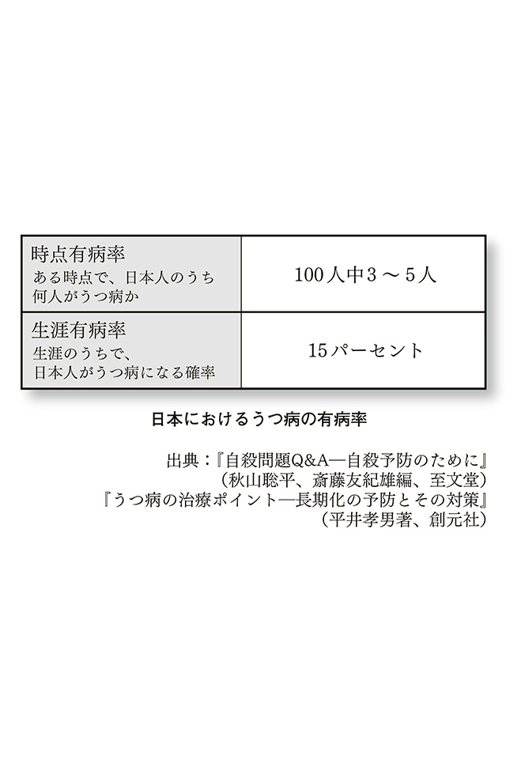
うつ病で見られるコミュニケーション能力の低下については、基本的にうつ病が治癒すれば改善します。しかし病前の性格として、もともと几帳面でまじめ、他人の意見を取り入れることに抵抗を強く示す、かたくななコミュニケーションタイプの人も多いので、そのような場合には、もともとの考え方やコミュニケーションの方法を変えていく必要があります。
そうしないと、仮にうつ病が治ったとしても、また再発して同じことを繰り返す可能性があります。
考え方を変えることを「認知（物事のとらえ方）を変容する」ともいい、これは認知行動療法の一つの技法です。考えが柔軟になればコミュニケーションも円滑に進めることができます。うつ病になった人は、うつ病をきっかけにして自分の考えの偏りに気づいて、よい方向に認知を変容していくことが大切です。「災い転じて福となす」ですね。
しかし、このような人たちに、考え方を変えることを周囲が押し付けてもうまくいくはずがありません。自分が違和感を覚える他者からの意見に対して、ますますかたくなさを増して強く抵抗することでしょう。
したがって、うつ病の人が自ら気づき、その気づきを上手に応援していくような周囲の「焦らない見守りの姿勢」が必要になります。
では、実際の精神科での面接から、対応法のヒントについて考えてみましょう。
最初から、自分の思考の悪い癖などに気づいている人はいません。したがって、面接では最初からそのような思考の癖を指摘せずに、まずは「傾聴」に努めます。そのなかで、患者さん本人の言葉から、思考の癖に関する気づきを抜き出し、タイミングよく面接のなかで話題にしていくのです。
Ｄさんは、最初の頃の面接では─
「部下が自分のいうことを聞いてくれません。私が若い時は、上司のいうことは絶対だったものですよ。最近の若い者の考えていることはまったくよくわかりません」と訴えていました。しかし、面接を重ねるにつれて─
「妻には、あなたの言い方もちょっとキツイんじゃない？といわれたりします。でも、私は、あえて、憎まれ役を買っている。『よくない頑固なところ』も見せなきゃと頑張っているんですよ」
ここで、本人の言葉で「よくない」というキーワードが出てきました。自分の「かたくなな考え」について語り、自ら、そのような考え方はよくないという「気づき」について述べているのです。
＊
──ということは、自分でもそのような考え方があまりよくないという気持ちもあるのですね？
「そうですね、なんとかしないといけないとは思いつつも、同じことの繰り返しでそんなことが続くとちょっと嫌になってしまいますね」
──それでも、自分のそういう「考えの癖」のようなものに気づけるだけでもたいしたものですよ。わかっていても気づくのを嫌がる人たちも多いものです。
「そうでしょうか......」
──たとえば、部下が、あなたからの仕事の指示を嫌がっているように感じるわけですよね？
「はい、そう感じます」
──なぜそのように感じるのでしょうか？
「視線を合わせても避けるように目をそらしますし、そもそも私のことをあまりよくは思っていないと思います。きっと口うるさい上司と思って、同僚と陰口でもたたいているのでしょう」
──実際に陰口を聞いたことはある？
「いえ、ないです」
──というと、もしかするとあなたの思い過ごしかもしれない？
「まあそうかもですね」
──たとえば、あなたが新入社員だった時を振り返ると、上司の人ってどんな感じでしたか？
「うーん、ちょっととっつきにくかったですね。どう接していいかわからないというか」
──仕事の指示なんかされた時は？
「慣れないうちはミスしたらどうしようとか、ネガティブなことばかり考えていましたね」
──だんだん慣れてきましたか？
「はい、そうですね」
──何か自信になるようなきっかけはありましたか？
「そうですね、プロジェクトを成功させた時に、普段、なかなかほめてくれない上司からねぎらいの言葉をかけてもらったんですね。あの時は、これまでのツラかった体験も報われたと感じました」
──じゃあ、何かのきっかけで上司との関係性も少し変わった、と。
「そうですね」
──もしかすると、今の部下の方も、あなたが昔、上司に感じたのと同じことを感じているかもしれませんね。
「たしかに、そういわれるとそうかもしれませんね」
──どうすればうまくいくでしょうかね。何かアイディアはありますか？
「うーん、じゃあ部下がちょっと何か達成したときにほめてあげましょうかね。でもなかなかこっちの期待するパフォーマンスをしませんからね、能力的に問題があるのかも」
──みんな最初はそんなものでしょうし、少し、あなたのなかの目標設定、ハードルを下げてみてもいいかもしれませんね。些細なことが達成できただけでもよいと思えたら、あなたも部下の方も少し楽になるかもしれませんよ。
「そうですね。ちょっとやってみますかね。できるかなあ」
──最初から上手にできなくてもいいですよ。ちょっとずつ、ちょっとずつ取り組んでいきましょう。
「わかりました」
＊
いかがでしょうか。これは診察の一場面を抜き出したものです。
精神科医といえば、即有効なアドバイスや特殊な対話法を使っていると思われるかもしれませんが、実際はこのようなのらりくらりとした面接ばかりです。このように文章にしてみると、誰にでもできそうな会話かもしれませんが、ここで大切なのは、自分の考え方や倫理観を、押し付けないことです。そして、気づきをできるだけ相手の人から引き出すようにするということ。
「こうすればいい」と教えるのではなく、「どうすればよいか」を一緒に考え、ベストなのは自然な会話の流れのなかで、その人自身から答えが出てくることです。「困った人」は、実は自分のなかに答えを持っていることがほとんどなのです。
困った人に対するコミュニケーション技法については、後ほど、もう少し具体的に説明していきたいと思います。
さきほどの例は、「典型的なうつ病」です。「うつは心の風邪」だから、薬を飲んでしっかり休養すれば必ず治ります、とよくいわれています。そして、うつはまじめで几帳面な人がかかる病気だ、とも。
しかし最近は、うつ症状を訴えてくる患者さんのなかに、このような典型的うつ病の方は少なくなりました。代わりに、非常によく見られるようになったのが、「新型うつ病」や「適応障害」による「非定型的なうつ状態」です。
社会の複雑化にともない、精神疾患は軽症化し、症状も多様化しています。これは、「典型的うつ病」だけに限らないことです。街の書店には、新型うつや発達障害の書籍が最近はあふれていますね。言い方はヘンですが、新型うつ、発達障害はブームなのです。
さて、新型うつについてですが、これはインフルエンザウイルスが進化して新型になったように、うつが進化して「新型」うつになったものでしょうか？
僕は、うつ病も新型うつ病も、基本的には同じ病態を呈していると考えています。
たとえば、円錐の立体図を想像してください。これは、上から見ると円です。横から見ると三角形ですね。さらに、ある側面から切り取ってしまえば、楕円形にもなります。
これは、東京慈恵会医科大学の小野和哉先生が提唱されていた発達障害についての見方なのですが、非常に明快、かつ納得のいくもので、「うつ病」と「新型うつ病」の関係にも適用できると僕は感じました。もっとも、発達障害については、これに時間軸、つまり時間によって円錐形が変化していくという「四次元的アプローチ」が必要になってきますので、考え方やとらえ方はより複雑なものになっていきます。
多様化するうつ病概念には、さまざまなものがあります。「新型うつ病」「ディスチミア親和型うつ病」「未熟型うつ病」─どれも、基本的には同じ病態を、違う観点から切り取り、命名しているだけと考えるほうがシンプルです。
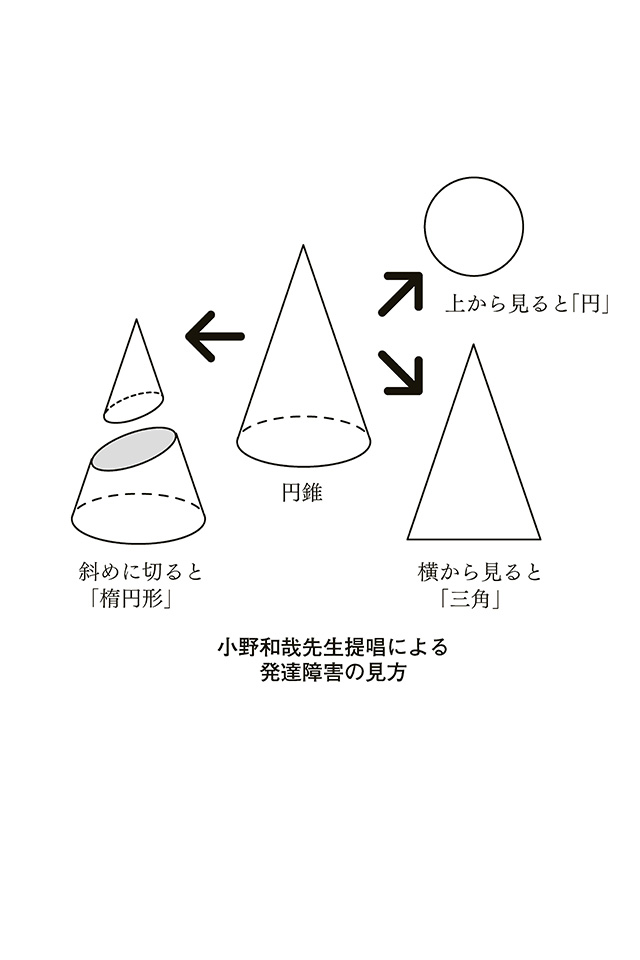
皇太子妃・雅子さまも「適応障害」であることが宮内庁から発表され、広く報道されました。雅子さまの場合は、適応障害によるうつ病であると考えられますが、これも最近のうつ病タイプと類似しています。
・原因不明ではない。
・環境要因が大きい。
・元来の性格要因にはよらない。うつ病になりやすいという気質は同定できない。
・一日中まったくエネルギーが枯渇しているわけではなく、自分の好きなことは楽しめる。
・従来型うつのように、「抗うつ薬を飲み、休養する」だけでは治らない。
さて、ではどのようにすれば、新型うつや適応障害は、快癒に向かっていくのでしょうか。具体例を交えて見ていきましょう。
Ａさん 43 歳女性、主婦
50 歳の夫と８歳の息子の３人家族。夫は外資系企業で働いており、平日は帰宅が12 時をまわることも多い。８歳の息子は小学校になかなか馴染むことができず、そのことで学校から呼び出されることもしばしば。夫の両親は同居はしていないものの、近くに住んでおり、健康状態も悪いので、時折、介護に行かなければならない。
＊
Ａさんは、介護に行こうとすると体調が悪くなる、口数が少なくなるなどのコミュニケーション不全を呈していました。
かと思えば、大学・ＯＬ時代の旧友とのランチなどは気分よく出かけることもできるのです。自分の好きなことはできるので、周囲から見ると理解しにくく、うつというよりは「わがまま」ととられることも多くなります。
そのような見られ方をすることが、ますます本人を追い詰め、夫の両親からも否定的な見方をされることも増えるので、ますます足が遠のくという悪循環になります。
もう一例。
Ｂさん 28 歳男性、会社員
大学を卒業後、営業職として入社。それなりに４年間頑張ってきた。忙しいながらも充実した日々を送っていたが、部下も増え、部下の指導や上司との折衝など対応に悩むことも多くなってきた。
次第に会社に行くのがおっくうになり、働いている時には笑顔も少なくなってきた。
趣味は、休日にアイドルのイベントに行くことであるが、それは楽しんで行くことができている。
唯一、自分がほっとできる空間だったのだが、イベント帰りに上司と偶然道端で出会い、普段と違う生き生きした姿を見られ、「その元気をなぜ会社で出さないんだ」と責められるような口調でいわれたことが気になる。
上司は自分のことを理解してくれない人だからと、自分のなかで壁をつくってあきらめるようになっている。
＊
たしかに、Ｂさんは今どきの若者で、上司からすると「仕事に対してやる気がない」と思われてしまうかもしれません。彼の場合は、抗うつ薬など薬の服用でなんとかなる問題なのでしょうか。部下の指導、上司との折衝について、どうすれば心理的抵抗を軽くして、うまくやれるようになるのでしょう。
物事に対するとらえ方は１００人いれば１００通りです。同じ出来事に対する反応や感情が人それぞれ違うのは、この「とらえ方」、すなわち「認知」が一人ひとり違うからに他なりません。ある出来事に対するとらえ方を、「マイナスなとらえ方」から「適切なとらえ方」に変えていくことを、「認知療法」と呼びます。Ａさん、Ｂさんには漫然とした抗うつ薬による治療よりは、認知療法的な治療が必要なのです。
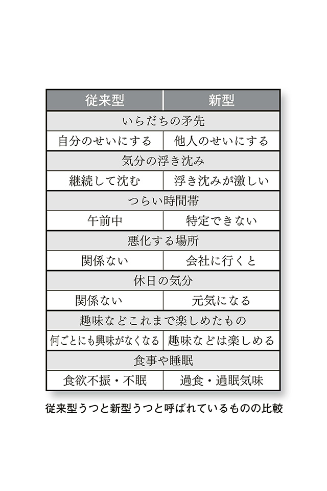
しかし、このようなケースでは、本人はなかなか自分の問題を認めたがらずに、いったんは受診したものの、次第に足が遠のくことも珍しくありません。
そこで、「周囲の対応」が大切になってきます。周囲の対応とは、Ａさん、Ｂさんのような人の気分・意欲の変動を理解してあげることです。
では、どのように理解してあげればよいのでしょうか？
ここで大切なキーワードが、「共感」です。共感というのは、もし、自分が相手が置かれている立場にいるなら、どんな感情や行動を起こすだろうかと想像して、相手の身になって感じることです。
たとえば財布をなくして悲しんでいる人に対して、あなたはどう感じるでしょうか？ 「可哀想だなあ」と感じるのも一つの感情でしょうが、それは「同情」であって「共感」ではありません。自分なら、財布をなくしたらあわてふためくだろうし、その後の煩雑な事務手続きを考えると気分がふさぎ込んでしまうかもしれない、ずっと大事にしてきた思い出の財布だったのかもしれない、ということまで想像できるのが共感です。
Ｂさんのケースをもう少し見てみましょう。
そろそろ仕事にも慣れ、自分の成果も出はじめた。しかし、新入社員の指導などこれまでやったことのなかった新しい仕事も増え、上司との面倒な折衝も増えてきた。
このような時期には、つい後ろ向きに考えてしまうこともあるでしょう。年齢的には20 代後半、人生経験・社会人経験ともまだまだ未熟です。少し気分がおっくうになるのは無理もないと理解できると思います。
この、「理解できる」ということが大切なのです。共感したうえで、理解する。そしてそのあとの具体的な対応を一緒に考えてあげることが、周囲の人たちには必要となってきます。
Ｂさんの場合は、上司が一緒にクリニックまで付き添って来てくれました。医師から、Ｂさんの状態が「怠け」や「わがまま」ではないことを説明され、上司もいたずらに叱咤激励することを避けるなど、対応をあらためるよう努力するということになりました。
Ｂさんにも、上司の配慮が伝わり、その結果、何もかもネガティブにとらえていた自分の認知特性に気づき、少しずつ意欲が改善してきたようです。
その後、数回の診察を経て、「会社には会社の方針がある、自分にもできないことがある。無理に我慢してため込まず、上司とコミュニケーションを取ってやっていこうと思えるようになりました」と語れるまで、Ｂさんは回復しました。
その後、終診となりましたが、現在も元気に社会人生活を送っているようです。
なんにつけても、マイナスな受け止め方をする人はいるものです。こちらの励ましの言葉や、「もっとこうすればいいんじゃない？」といったアドバイスにも「自分を否定された。自分はこんなに頑張っているのに」と否定的に受け止め、ますます自分の殻に閉じこもり、ネガティブになっていく人たちです。
そのような人に、周囲はどのように対応すればいいのでしょうか？
双方の思いがすれ違い、コミュニケーションでトラブルを起こしている場合、大切なのは一つひとつの成功体験です。
ネガティブな人たちが、こちらのアドバイスをすべて素直に受け入れ、ポジティブにとらえることはまずありません。しかし、10 回コミュニケーションを取ったとして、そのうち１回か２回は「うまくいった」と感じることができるコミュニケーションなら期待できます。
そのような「うまくいったなぁ」「話が通じたなぁ」というコミュニケーションを一つずつ積み重ねていくことが大切なのです。
この時、周囲の人は、あせらないことが大切です。右肩上がりに関係性が改善していくことは難しいのですから。
「うまくいった」「関係性は少し改善した」「前進したなぁ」と感じても、その次には、またもとの木阿弥となってしまうのはよくあることです。そんな時は、自分が一生懸命、相手のためを思って取り組んできたことはなんだったのかと落ち込むこともあるでしょう。
でも、あせってはいけません。そのようなことが起こるのは想定内であると理解し、開き直ることが大切なのです。
たとえるなら、三歩進んで二歩下がる、ということです。結果を見れば、一歩は進んでいるのですから、よいことなのです。行ったり来たりしながら、少しずつお互いのコミュニケーションを良い方向に伸ばしていきましょう。
Ａさん、Ｂさんの例はやや軽度なものです。みなさんのまわりには、よりネガティブ思考が深刻で、より重症な場合もあるかと思います。
では、成功体験とは逆に、10 回のコミュニケーションのうちの１回の失敗を致命的だととらえ、相手に過剰な敵対心を向けてくるネガティブ思考が深刻な人の場合は、どうすればいいのでしょうか？
これは、「パーソナリティ障害」と呼ばれる人たちに多い「物事のとらえ方」です。この人たちに対する接し方、会話方法を探っていきましょう。
Ｅさん 24 歳女性、事務職
初対面の人とも比較的すぐに打ち解け、コミュニケーション能力は決して低くない印象。独身で、彼氏もいるのだが、問題は男性との付き合いが長く続かないこと。どうも、彼氏への束縛が異常といえるほど強いのが原因の一つと思われる。
自分が彼氏と会いたくなったら、夜中でもかまわず彼に電話。呼んだら夜中でも遠くでもすぐに来てほしい。来なかったら自分への愛はないのか、私と仕事とどっちが大切なの、もうあなたは私のことなんか見捨ててしまうのね、とすぐに電話で泣き叫び、挙げ句のはてには「クスリをたくさん飲んで今から死にます」とメールを送る始末。
当然、彼氏は疲れはて、すったもんだの末に、結局別れることに。また新しい彼氏ができれば、すぐに「運命の出会い」「一生の恋人が見つかった」と入れ込むが、ほどなく「あの人は理想とは違った。もう二度と会わない」と非常に極端な感情の動きを見せる。
＊
Eさんは、最初は過剰なまでに相手を理想的であると思い込むようですが、少しでも相手の嫌な部分が見えると、それを受け入れることができず、全面的に嫌いになります。その様子は、まるでオセロ・ゲームの白が黒にひっくり返るようです。
物事について白黒つけたがり、適当や中途半端という考え方が苦手というのが彼女の思考パターンの特徴です。
「自分に何かできることはないか」と考えてくれる献身的な友人に対しても、相談ごととなると夜昼かまわず電話をかけ続けてしまい、疲れはてた友人がどんどん離れていってしまうのです。
友人がどんどん離れていくので、「自分を理解してくれる人はいない。どうせみんな自分のことを嫌っているに違いない」とネガティブに思い込む日々が続いています。
人は誰しも成長の過程で「パーソナリティ」（人格）が形成されます。生まれながらの性格に環境的な影響が加わって、人それぞれのパーソナリティが構築されるのです。「パーソナリティ障害」とは、そのパーソナリティに問題があり、社会行動生活上さまざまな支障をきたす疾患のことを呼びます。
この疾患では、Eさんのように、周囲をわがままに振りまわすなどの行動特性を示します。パーソナリティ障害に見られる代表的特徴は、短絡的な思考、すぐに行動に表してしまう「行動化」、オールオアナッシングの思考、があります。
すぐに行動に表してしまうのは、社会のなかで生活するのに、まったく適切ではありません。薬を大量に服用したり、手首を切ったりするという「行動化によるコミュニケーション」ではなく、「言語によるコミュニケーション」─つまり、自分の考えていることを言語化して、言葉でのコミュニケーション能力を育てていく必要があるのです。
このような人たちは、育てられてきた環境に問題があることが多いとされています。たとえば、アルコール依存症の父親に育てられた子どもがパーソナリティ障害的な特性を持つケースもしばしば見られます。このような子どもたちのことを「アダルトチルドレン」と呼びます。もともとは「Adult Children for Alcoholics」の略ですが、現在はアダルトチルドレンの範囲が拡大され、機能不全家族で養育された子どもという意味になっています。
父親がアルコール依存症者で、高圧的で独裁的な家庭である場合、夫婦喧嘩などの家庭内不和が絶えません。本来、子どもというのは、やりたいことを我慢せずになんでも気ままに好き勝手に表現しながら成長していくものです。しかし、家庭内不和で育った子どもは、不和である夫婦を自分が「良い子になる」ことでつなぎとめようとするのです。
つまり、子どもらしさを放棄して、常に大人の顔色をうかがって生きるようになってしまうのです。健全な自己表現は、当然、抑圧されます。やがて、思春期以降になっても、適切な自己表現ができないために、行動化などの問題行動となって出現するのです。
世界を信頼できないために、常に自己を矮小化してしまうので、自信が持てません。そして、その焦燥から「見捨てられ不安」が生じるのです。
パーソナリティ障害の人たちは、適切な理解者と治療者のもと、世界への信頼感を徐々に取り戻していくしかありません。そしてその治療には、適切な自己表現方法、コミュニケーション方法の確立が必要不可欠となります。
パーソナリティ障害の人たちに対して、周囲ができることはなんでしょうか？ ここでは、「限界設定」（構造化）というキーワードを挙げてみましょう。
Eさんは、自分が信頼できると思った友人には頼りっきりになり、昼夜おかまいなく電話をかけ続けるといいます。もしあなたが友人なら、どのようにして支えてあげることができるでしょうか？ できるだけEさんの思い通りに、頑張って電話を取って、時には会って、相談を延々と聞いてあげることが彼女のためでしょうか？
そのような方法を続けて、Eさんは満足したとしても、あなたは疲弊してしまいますね。そのうち「どうして自分ばかりがこんな損な役まわりをしないといけないのか」と悩むことになるでしょう。さらには、「大切な友人に対して、『私は損な役まわりだ』と考えてしまうなんて、自分は小さな人間だ─」と、自己嫌悪に陥ることもあるでしょう。
Eさんの思うがままにお付き合いをしていくのは、あまり上手な対応とはいえません。では、どのようにすればいいのでしょうか？ 具体的な方法を紹介してみましょう。
〔電話が鳴る。月曜日の深夜１時である〕
──もしもし。
「またツライことがあったの。聞いてほしいの。私は悪くないんだけど、なんでこんなことばっかり私に起こるのか、本当に理不尽だと思う」
──（またか......でも断るとタイヘンなことになるし、10 分くらい適当に話を聞いたところで、何か理由をつけて切ろうかな......）
（10 分経過）
──もっと話を聞いてあげたいんだけど、明日の仕事もあるし、そろそろ眠くなってきたから......。
「あなたは友だちが苦しんでいるのに、自分の仕事のほうが大切なのね......私はあなたのように常勤の仕事もないし、あなたには私の気持ちはわからないでしょうね。もういいわ！私、睡眠薬をたくさん飲んでるから、もしかしたら明日の朝は目が覚めないかもしれない。サヨナラ！」
（と、ガチャンと切れる）
──（ああ、どうしようかな、こっちから電話をかけないと、また逆切れされるし......困ったなぁ）
深夜にもかかわらず、一生懸命話を聞いてあげたのに、理解されずにお互い残念な結果になってしまいました。それでは、次のような対応はいかがでしょうか。
〔電話が鳴る。月曜日の深夜１時である〕
──もしもし。
「またツライことがあったの。聞いてほしいの。私は悪くないんだけど、なんでこんなことばっかり私に起こるのか、本当に理不尽だと思う」
──そう、たいへんね。でも、今から15 分後に、緊急の仕事でどうしても連絡をとらないといけないところがあるの。それまで10 分くらいなら、話を聞いてあげられるけど、それでもいいかなぁ。
「わかった」
（10 分経過）
──ごめんね、時間がきちゃったから、またね。ぼちぼちゆっくりね。
「わかった、ありがとう」
最初は、このようなやんわりとした方法から始めるのがいいでしょう。さらに仲が「こじれるパターン」としては、自分自身が我慢に我慢を重ねて対応した結果、突然、相手に対して拒絶的になることです。
「コミュ障な人」である相手は、当然、あなたの我慢など感じることもありませんから、昨日まで自分に対して受容的であった人が、「なぜ急にこんな拒絶した態度をとるの？」とますます混乱し、怒りや不安感を高めることにつながりかねません。
後半の「こじれないパターン」で行ったテクニックが、時間の「限界設定」（構造化）です。
まず、自分が受け入れることができる時間について、10 分と示していますね。そして大切なのは、それを最初に予告することです。
二つの会話例は、どちらも同じ10 分間話を聞いているわけですが、相手が受ける印象はまったく逆のものとなっています。
前半の例では、打ち切られた恨みでいっぱいです。後半の例では、忙しいなか10 分も時間をとって話をしてくれたという感謝の気持ちすら湧いてくる結果となっています。
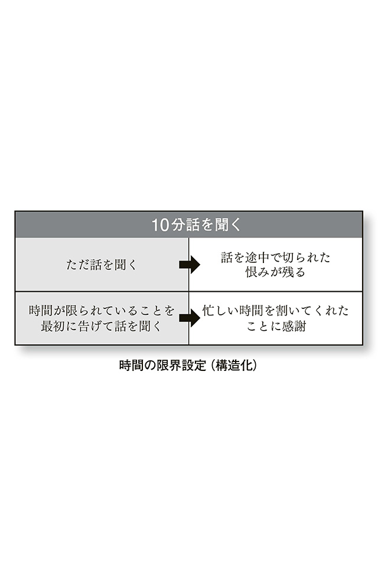
これは、僕が診察のなかで気づかされたことでもあるのです。
ある時、当院をセカンドオピニオン目的で受診した患者さんがいました。問診票には、「ゆっくり話を聞いてほしい」と書かれていました。初診では、どの患者さんも30 分程度お話を聞くようにしていますので、ゆっくりと話を聞いていきました。
しかし、二回目からはそのような時間をとることはできません。正直にいいますと、クリニックは経営上、一人当たり毎回30 分の保険診療をしていては成り立たないのです。現行の医療診療報酬制度では、一人当たり５分の診察でも20 分の診察でも医療機関側が受け取ることができる診療報酬は同じなのです。
セカンドオピニオン目的でやって来たその方に、「今、あなたが通っているクリニックでは主治医の先生はどれくらい毎回時間をとって診察してくれているのですか？」と聞いてみました。すると、「毎回15 分くらいですね」という答えです。
「15 分！ それは十分な長さですね。僕の診察は、今日は初めてなので30 分ほど時間をとっていますが、二回目からは５分程度ですよ」と患者さんに伝え、診療報酬制度の問題点も説明しました。
「そうですか、私は先生が診察時間を長くすれば長くするほど儲かるものだと思っていました。そのような診療報酬の話など聞いたことがなかったものですから、その話を聞いて少しすっきりしました」
「そうです、あなたが15 分も時間をとってもらって診察を受けているのは、主治医の先生からすると、非常にていねいに対応しているということなんですよ」
「今日は納得できました。これからもまた、もとの先生の所に通院します。できれば今日の話は、主治医の先生から聞きたかったのですが」と答えて、帰って行きました。
同じ労力を使ったとしても、事前にその行為の目的を説明し、理解を得たうえで行うのと、予告なしで行うのとでは、まったく違った治療効果が得られるということが勉強できた貴重な経験でした。
コミュ障な人と付き合う時には、自分がどこまで援助できるのか、自分のなかでの時間的「限界設定」を決めることが大切なのです（時間の構造化ともいいます）。
これを時間ではなく、空間的な構造化でたとえるなら、基本的には僕はクリニックに「来ていただいた」患者さんの話を聞く、ということにしています。患者さんから、「先生、今日は自宅まで往診しに来てください」といわれても、それには応じることはできません。 僕は、自分のなかの対人援助の構造をルール化しているわけです。そして、どの患者さんに対しても、そのような構造設定について事前予告・説明をしています。
なかには、自分で移動することができない患者さんが往診を求めてくる場合もありますが、その時は、当院にお任せくださいとは、残念ながらいえません。僕はすべての人を救えるわけではありませんし、医者は神様のようにはなれません。
みなさんも、Eさんのような困った人に対応する時には、自分にできることには限界があると自己認識したうえで、適切な行動をとることが大切になってくるわけです。
パーソナリティ障害による「自己愛の低い人」「自己肯定感の低い人」というのは、「どうせ自分は何もできない」「自分など生きていても価値のない人間だ」と、必要以上に自己卑下をしてしまうものです。そのような人たちに、どのように接してあげればよいのでしょうか？
自己愛の低い人、自己肯定感の低い人というのは、「ゼロ：１００思考」「オールオアナッシング思考」に陥りがちです。
もし、あなたが誰かから些細なアドバイスを受けた時、自分の弱点を少し指摘されたとしましょう。たいていは、「自分のことを考えてくれて指摘してくれたんだな」と考えて、「これからは指摘されたところを意識して改善していこう」と前向きにとらえることができると思います。
しかし、自己肯定感の低い人は、少しでも自分の弱点を否定されたり、ネガティブな意見を投げかけられただけで、「自分のすべてが否定された」と極端に受け取ってしまうのです。かと思えば、自分のことを認めてくれる人を過剰に信奉し、「あの人のいっていることはすべて正しい」など、極端な全肯定をすることもあります。
何を考えるにしても、物事の受け止め方がオールオアナッシングな思考・認知過程のなかにあり、「間（あいだ）」「中庸」という感覚に乏しいのです。
このような人たちが、一人職場にいるだけで、周囲の気の使いようはたいへんなものがあります。そして、どの職場にもこのような人たち（もしくは、このような傾向を持つ人たち）は一人や二人、いるものなのです。
職場を円滑にしていくうえでは、「困った人」を排除するのではなく、周囲が上手な対応を考え、彼らの失われた肯定感を一緒に取り戻していくことが大切です。
では、「自己肯定感を取り戻す会話」とはどのようなものなのでしょうか？ シュテファン・ツヴァイク（作家・評論家 １８８１〜１９４２年）の有名な言葉があります。「自負は常に他人の感嘆によって強化される」─。
簡単にいえば、それは「会話の波長を合わせる」ということです。それも表面的な波長合わせではなく、感情体験を共有するということです。
具体例を挙げてみましょう。たとえば、過剰に相手を理想化している「コミュ障な人」との会話。
「先輩はいつもおしゃれですね！ 毎日毎日着て来る服がすごくかわいい！ 私も先輩みたいになりたいなぁ。ほんと全部好きなんです」
このように話しかけられた時、「そんなことないよ」と照れ隠しであれ、相手の称賛の言葉を否定してしまうのはよくありません。否定してしまうと、相手は「せっかく自分がほめたことを、否定されてしまった─私の意見なんてどうでもいいと思っているんだ」となりますし、極端な場合は、逆恨みにまで発展することもあるのです。
では、どのようにすればよいのでしょうか？
ここでは、いったん、相手の言動を肯定して受け止めてしまうのです。
「ありがとう。そんなにほめてもらえて、うれしいなぁ。でも私も、あなたのこの前の仕事、スムーズに取引先と交渉できたことにすごく感心したんだよ」というように、返していくのです。
このような、肯定的な感情と言葉のやりとりで、コミュ障な人の自己肯定感も育まれていきます。もちろん、コミュ障以外の人との日常会話でも十分使えるテクニックですので、ぜひ使ってみましょう。
Ｃさん 21 歳女性、大学生
もともと内気な性格だったが、幼稚園や小学校の頃は、それほど自分の内気を問題と思ったこともなく、それなりに楽しく学校生活を過ごしてきた。
中学生になって、現代文の授業で、前の席から順番にあてられて教科書を読み上げていく時に、突然、動悸がして汗がとまらなくなり、「うまく読み上げていないのではないか」と感じた。そう思えば思うほどあせってしまいながらも、なんとかその場は切り抜けた。
これまで、そのようなことはなかったので非常に戸惑ったが、その場限りのことであるに違いないと自分に言い聞かせた。
数日後の現代文の授業で、再び、順番に教科書を読み上げていく時、自分の順番が近づいてくるとどんどん動悸がひどくなっていった。読み上げる声も、自分で「震えているのでは」と思い込んでしまい、惨憺たる思いをした。
＊
以来、Ｃさんは、おおぜいの前で話をすることに対して非常に苦手意識を覚えるようになりました。親しい友達との会話程度なら大丈夫なのですが、実は、自分の声にもコンプレックスを持っています。
「こんな声だなんて、おかしな子だと馬鹿にされるんじゃないか」と、実際に誰かに指摘されたわけでもないのに、他人と話をする前から、悪い方へ悪い方へと想像を巡らせてしまい、不安は高まるばかりです。Ｃさんのように、事前に、起こってもいない悪いことを想像してしまい不安になることを「予期不安」と呼びます。
最近は会話をすることもすっかり怖くなってしまい、そのような機会をできるだけつくらないようにしようと、かたくなに思ってしまう日々が続いています。このままではよくないとはわかっているのですが......。
「社交不安障害」とは、社会生活の場面で対人交流をはかるときに、「失敗をする」「恥ずかしい思いをする」ことに過剰な恐怖や不安を感じてしまう障害です。そのような状況におちいるのが嫌で、次第に人と交流するのを恐れ、ひどくなると学校に行けなくなったり、会社に行けなくなるなど、日常社会生活に支障をきたす場合もあります。
コミュニケーションにかかわる疾患なので、初対面の人と会ったりするのが非常に不安・苦手である、おおぜいの前で話ができない、目上の人と会話をする時に過剰な緊張をしてしまう、などの症例があります。
かつては「あがり症」「赤面症」など、性格の問題としてとらえられることが多かったのですが、現在では治療可能な疾患と考えられています。原因は不明で、有力な仮説として、脳内の神経伝達物質であるドーパミンとセロトニンの分泌異常による神経過敏状態が考えられています。
アメリカでは７、８人に一人が社交不安障害であるという報告もあり、うつ病の次によく見られる精神疾患です。10 代後半から20 代前半に多く発症しますが、おおぜいの前で発表する時に、「緊張していることを自覚したこと」がきっかけになるなどと考えられています（出典：Kessler R. C. et al:Arch. Gen. Psychiatry 51(1) 8, 1994(R03940)）。
治療は、「行動療法」と「薬物療法」に分けられます。行動療法は、対人交流や社会活動を回避せずにチャレンジしていくことで自信を深めていくことが目的です。薬物療法としては、抗うつ薬や抗不安薬の服用によって緊張が緩和され、スムーズに行動できるようになることが知られています。
過剰な緊張をやわらげる「リラクゼーション技法」も効果的です。コミュニケーションの場面でも、積極的にリラクゼーション技法を活用することで不安緊張は緩和します。リラクゼーション技法のもっとも身近な例は、「ゆっくり呼吸をする」というものです。
さて、Ｃさんのような人たちに対して、周囲の人たちができることはあるのでしょうか？ たとえばあなたが親だとして、不安感や緊張感の強い子どもには、どのような対応を心がけるべきでしょうか。
まず覚えておくべきなのは、不安感や緊張感の強い子どもというのは、「何か理由があってそうなっている」わけではないということです。「対人恐怖」というのは、人が怖いというものですね。しかし、「不安感が強い」というのは、対象が非常に漠然としています。なんとなく不安で、対象がはっきりしないので、周囲も手助けをするのに苦労するわけです。
（しかし、不安・緊張というのは、生きていくのにある程度必要な感情ですね。原始の時代では、いつ敵が襲ってくるかわからない状況だったため、人間は、たとえば「暗闇が怖い」などという、不安・緊張を感じるようにできているのです）
現代社会で問題となってくるのは、不安・緊張により、行動が制限されてしまうことです。予期不安によって、「失敗したらどうしよう」と、起こってもいない悪いことを勝手に想像し、行動を回避してしまうことが問題なのです。
不安・緊張の強い子どもに対して保護者ができることは、行動をうながすこと、そして「失敗しても大丈夫」という保証をしっかり与えることです。
行動をうながすには、結果にとらわれずに挑戦した過程を評価してあげることが必要です。そのような保護者の一貫した対応により、子どものなかに「失敗しても怒られないんだ、挑戦したらほめられるんだ」という、感覚が根付くのです。
現代社会では、結果重視の風潮が強いのですが、不安が強い時代だからこそ、過程を大切にしてあげましょう。
さて、ここまではうつ病や新型うつ病、パーソナリティ障害、社会不安障害など「後天的な要因」により起こるコミュニケーション障害について述べてきました。
ここから先は、「先天的な発達の問題」によるコミュニケーション障害について述べていきましょう。先天的とはつまり、親の育て方や環境によらないもの。生まれつき、発達にアンバランスを有する疾患という意味です。
ここでは、「発達障害」という言葉がキーワードになってきます。
発達障害と同様の先天的な疾患には「知的障害」がありますが、これはアンバランスというよりは全般的な発達の遅れなので、患者の病態や行動などは、周囲の理解が得られやすいといえます。
しかし、発達のアンバランスは、遅れがないので理解がしにくい。そのうえ、患者本人の「できること」と「できないこと」の差が激しいので、「なんでこんな難しいことはできるのに、こんな簡単なことはできないの？ たんにサボってるだけでしょう、やる気の問題でしょう」と誤解されることも多いのです。
発達障害というのは、「どこからどこまでが発達障害」と具体的な線引きができるものではありません。「発達障害の人」と、「普通の人」とを明確に区別することも困難であり、僕は日々の診療のなかで「境界不明瞭な人たち」が増えている、と感じています。
それでは、現代の発達障害の事情はどうなっているのでしょう？ 具体的事例を通して、見ていきましょう。
Ｒさん 24 歳女性、会社員
部長「ちょっとこの書類を見てくれないか」
Ｒさん「はい、わかりました」
部長「あの書類、どうだった？」
Ｒさん「あ、見ました」
部長「おかしなところはなかったかな？ 数字はきちんと合ってたかな？」
Ｒさん「いや、それはいわれてないのでわかりません」
部長「君、普通、見ておけっていったら中身をチェックしなさいという意味だろう。
何を考えているのかね。ああ、もう疲れるよ」
Ｒさん「部長、体調でも悪いのですか？ 今日はお帰りになられたほうがいいのではないでしょうか」
部長「......」
このような状況が毎日続く、Ｒさんが受診。診察室に入ってきた彼女は、どうも表情がぎこちない。医師のあいさつにもほぼ無表情で返事をし、初対面のちょっとした会話のやりとりもなし。まっすぐ医師の顔をとらえたかと思えば、その視線は医師を射抜くようでまったく視線を外そうともしない。
「何かお困りのことはありませんか？」という質問に、「仕事がうまくいかない、取引先や同僚からは『空気を読め』といわれるけど、どう空気を読んでいいのかわからない。上司からの仕事の指示では『適当に仕上げておいて』といわれることも多いのだけど適当ってなんですか？ そのまま放っておいたら『なぜ指示通りに仕上げない』と怒られた。いつまでに仕上げろとも聞いていないから放っておいただけなのに。最近は上司や同僚に、わざとわかりにくい指示を出されて嫌がらせをされているのでは、と思います」と、抑揚なく一本調子で語った。
子どもの頃の様子を聞くと、「ぜんぜん問題なかった。高校では自分はみんなから『Ｒって天然だよね～、オモシロいわ』といわれてむしろ人気者だったと思う。何が天然なのかはよくわからなかったけど」と、特に困ったことはなかったという返事。
細かいことへのこだわりは強く、大学でも授業が教授の都合で突然休講になったりすると、事務局に抗議に行くこともあった。また、大学の授業では自分の座る席を決めていたが、そこに他の学生が先に座っていると困った、という。「たくさん席が空いているのに、自分がいつも使っている席に座られていると腹が立ちました」
「そういう時はどうするの？」と医師が聞くと、「その人の隣に座ると、なんだかすぐに移動してくれるので、いつもそうしていました。そのうち、私の席には誰も座らなくなったのでよかったです」と、空気の読めない行動を自慢げに話した。
＊
このような、対人関係におけるコミュニケーションの不調、雰囲気の読めなさを「社会的相互交渉の障害」といいます。Ｒさんには、明らかに社会的相互交渉の障害が認められ、生まれつき得意・不得意の能力差が大きい、発達障害の可能性が示唆されました。
二回目の診察にはＲさんのお母さんにも来てもらい、幼少時の様子を聞きました。子どもの頃から場の空気を読んだコミュニケーションができないなどの問題があり、電車のなかで見知らぬ禿げ頭の人を見ては「どうしてあの人は頭がツルツルなの！」と叫ぶなど、周囲をヒヤヒヤさせるエピソードも多かった、とのことです。
お母さんも、この子は何かおかしいのでは、と町の保健師さんに相談したのですが、「言葉の遅れや知的な遅れもないから大丈夫ですよ、お母さんの心配しすぎでしょう」といわれ、そんなものなのかなと放置していたとのことでした。
子どもの頃は、そのような空気を読まないコミュニケーションは、しばしば「天然だなぁ」と受け取られ、「愛されキャラ」にもなります。しかし、実際に利害関係のからむ社会人生活では天然で済まされるはずもなく、仕事上の意思疎通がうまくいかない人だと見られ、Ｒさんは次第に孤立することとなったのです。
二回の診察を経て「アスペルガー障害（自閉症スペクトラム障害）」と診断。母親、本人にも診断を伝えたうえで、「障害としてとらえるのではなく、特性としてとらえましょう。そして、今後、具体的にどうしたらうまくいくのか、一緒に方法を考えていきましょう」と前向きな理解を求めました。
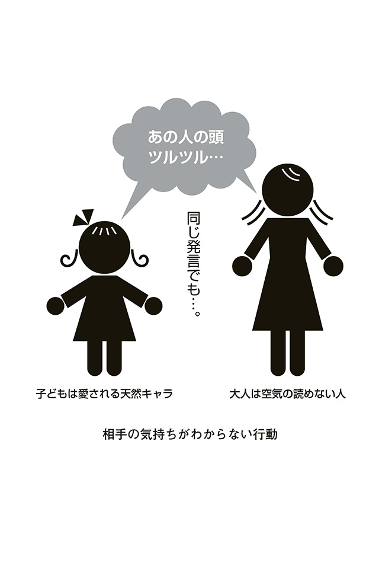
「アスペルガー障害」は、「アスペルガー症候群」ともいいます。生まれつき得意・不得意の差が激しく、発達の偏りを有する「発達障害」のなかの一カテゴリーである「自閉症スペクトラム障害」に属する疾患です。
アスペルガー障害は、いわゆる自閉症の一つですが、知的発達や言語能力に遅れがないのが特徴です。自閉症スペクトラム障害には「三つ組」といわれる特徴があります。
・社会的相互交渉の障害
・興味の限局（こだわり）
・コミュニケーション障害（言葉を字義通りにとらえるなどの言語的コミュニケーション能力の不具合）
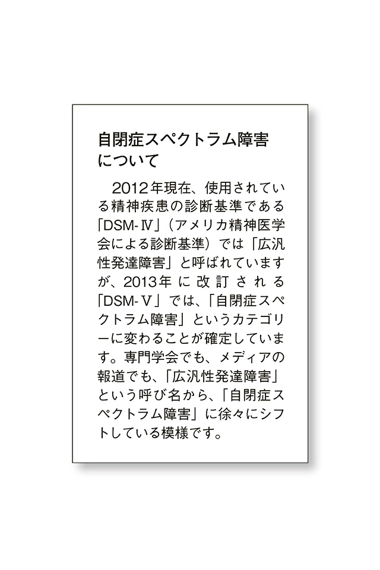
「興味の限局」とは、きわめて狭い範囲のことしか興味を持てないため、興味や行動が広がらないことを指します。逆に、同じことをしていれば安心なので、「こだわり行動」につながるのです。Ｒさんのような人は、世界を広げようとしないわけです。
これにコミュニケーション障害が加わると、対人接触も広がりを見せませんし、社会的にうまく適応できない場面が増えるわけです。「オタク」といわれる人の一部にも、このような特徴を持つ人がいると認められます。
アスペルガー障害は生まれつきの疾患であり、治ることはないといわれています。誤解していただきたくないのですが、これは「対処が不可能」という意味ではありません。あくまで、アスペルガー症候群としての特性を生涯持ち続けるというだけです。誰にでも、生まれ持っての性格や性質があり、それは修正されることはあっても根本的な気質は死ぬまで変わらないのと同じことです。
ですから、治らないといっても悲観的になることはないのです。自分の特性を知ったうえで、正しく適切なコミュニケーションスキルを身に付けて、活躍している方々はたくさんいます。
周囲にいる人たちには、Ｒさんの苦手なことに対して、無理にスキルアップをさせようとしない「かかわり」が求められます。
先述したように、１００メートル走を20 秒かかる人に、10 秒で走れるようになりましょう、といってもどだい無理な話です。もっといえば、Ｒさんは１００メートル走にそもそも興味がないのかもしれません。他の分野なら、得意で興味があるものがあるのかもしれません。ですから、周囲の人たちは、Ｒさんの走力を見きわめ、また、得意分野を見きわめたうえで、目標設定を見直すなどの具体的配慮が求められるでしょう。
では、アスペルガー障害を持つ人への、具体的配慮について見ていきましょう。
彼らは、目に見えないことをイメージするのが非常に苦手です。逆に、すでに視覚化されているものに対する記憶力は優れています。また、抽象的なコミュニケーションは苦手です。「最近、調子どう？」というような「オープンクエスチョン」には答えに窮してしまいます。
オープンクエスチョンというのは、何を答えてもいい、回答の自由度が高い質問です。「最近、調子どう？」というのはその典型ですね。これと対照的なものに、「クローズドクエスチョン」があります。これは、「あなたは男ですか？」、というような「Yes or No」で回答できるような質問です。
普通の人なら、だいたいどちらの質問にも、柔軟に答えることができますが、アスペルガー特性を持つ人にとっては違います。「何を答えてもいい」状況になると、途端に混乱してしまうのです。
このような場合でも、周囲にいる人がコミュニケーションを工夫するだけで、Ｒさんのような人の混乱を抑えて、対応することが可能です。
体調を訊ねるのなら、「最近、調子どう？」というオープンクエスチョンよりは、「昨日はよく眠れた？」とか「今日の朝ごはんはおいしく食べられた？」というように、イエスノーで答えることのできるクローズドクエスチョンが有効です。
仕事を頼む際にも、具体的な目標設定をしてあげる必要があります。
「この書類を頼む」というよりは、「この書類の文章を、外部のお客様にもわかるように、社内でだけ通じる専門用語を修正してください、期限は今週末までです」というほうが有効です。
このようなコミュニケーション技法は、実は、発達障害の人たちだけでなく、すべての人に対して有効であることにお気づきでしょうか？「すべての人に有効」ということを踏まえて、具体的な会話例と対応例を見てみましょう。
＊
部長「ちょっとこの書類の○ページから△ページのところ、数値計算に間違いがなく、矛盾がないかチェックしてくれるかな。明日の昼12 時までに完了してください」
R「わかりました」
──翌日
部長「昨日、頼んでおいた仕事、完成しているかな」
R「はい、チェックしておきました。間違い箇所が二つ見つかりました」
部長「おお、期限通りにしてくれたね、ありがとう。その修正はしてくれた？」
R「そこまでは聞いていないのでしておりません」
部長「わかった、次から同じように間違いのチェックを指示された時は、間違いが見つかったら修正しておいてくれるかな」
R「承知しました」
＊
ここでの会話のポイントは、次の四つです。
・一回の指示は、一つか二つのタスクにとどめる。三つ以上のタスクを一度の指示でしないように。優先順位がわからなくなり、混乱のもととなります。
・指示はできるだけ肯定文で行う。否定文の指示は混乱のもと（例：○○はしないようにすること→× ○○すること）。さらに、二重否定文になると、相手はもっとわけがわからなくなります（例：○○しないようにしてはいけない）。
・タスクを指示通りにこなせたら、しっかりとほめて「フィードバック」する。フィードバックというのは、相手の行動を評価して、その評価を相手に伝えて次の行動に生かしてもらうことです。ほめて評価を返すことを、「ポジティブフィードバック」といいます。ポジティブフィードバックは、適切な行動を「強化」していきます。
・それでもできないことに対しては、責めずに（「どうしてそんなことも先読みしてやっておかないんだ！」など）、次に生かせるように具体的な指導を重ねていく。
このような対応を繰り返し、指示がうまく通った「成功体験」を積み重ねることが、周囲や本人にとっても何よりの自信につながっていくのです。
Ｕさん 26 歳男性、会社員
幼少時から活発、多動で落ち着きがなく、道路に飛び出して車にぶつかったこともある、と受診して数々の武勇伝を語る。小学校では忘れ物のチャンピオンと呼ばれたことも。授業中は注意散漫だったが、自分が興味のあることになるとご飯を食べるのを忘れるくらいの集中力を発揮していた。
注意散漫な時と、過剰に集中する時のギャップがあまりにすごいので、周囲は理解に苦しむ。特に、注意散漫な時は手を抜いているだけだろう、とサボりの名人扱いされることもしばしばだった。
そんなＵさんも大学を卒業して社会人に。愛想のよさを買われて営業職に就職。それなりに新規契約を取って来るのだが、アフターフォローがまったくできなかった。しかも、顧客との約束を忘れたり、ダブルブッキングすることも頻繁に。その都度、同僚や上司が助けたが、入社して３年も経つとそろそろ周囲の目も厳しくなった。
さらに、コミュニケーションの面でも、愛想がいいのは営業職としては大切なことだが、どうも「ひと言多い」傾向が。顧客に聞かなくてもいいプライベートな質問をしてしまう、もしくは、聞かれてもいない自分の過去の話を延々と語りだし、気がつけば１時間が経過していたこともある。いったん、自分が興味のある話題になると飛びついてしまい、もとの話の流れを見失う様子。
また、「待てない」、つまりせっかちであることも問題に。プライベートで飲食店で食事をする時、呼んでも店員が来なかったらイライラする。たまに店員にくってかかることもある。注文してから食事が出てくるまで10 分かかっただけで、イライラは頂点に達し、「もう注文キャンセルして！」と店を飛び出してしまうこともあった。
＊
Ｕさんは、以上のような行動をした時には、頭に血が上った状態なのですが、しばらくして落ち着くと「なんであんな行動をしてしまったんだろう」と反省し、自己嫌悪におちいってしまいます。そんな自分をなんとかしたいと考え、インターネットで調べたところ「ＡＤＨＤ」という単語に行き当たりました。症状を読めば読むほど「自分にあてはまるのでは」と自覚して、精神科を受診することにしたそうです。
Ｕさんを診察し、症状を詳細に聞いていくと、たしかに発達障害の特性を有しているようでした。そこで両親にも来院してもらい、子どもの頃の様子など、生育歴を聴取しました。発達障害の特性を有する人の診察において、診断する時に保護者の方から生育歴を聴取することは不可欠です。
Ｕさんの場合、やはり、子どもの頃から「部屋を片づけない」「何かおかしい」と両親も感じ、保健センターなどに相談をしたこともあったようです。しかし、知的に遅れは見えないことから（前述のＲさんと同じですね）、「男の子なんだから、これくらいやんちゃで当然よ」「親が神経質過ぎてもよくないですよ」といわれ、自分たちの子育てを否定されたような気がして、次第に公的機関への相談に行かなくなったとのことでした。
クリニックを受診してほどなくＡＤＨＤの診断を受けて、Ｕさんは自分の特性を知ることができました。どのようにすれば円滑なコミュニケーションができるか、どうすれば仕事をミスなくこなすことができるか？ 前向きに、そして具体的に考えていきましょう、ということになり、今は、自分なりにさまざまな方法を試行錯誤しているところです。
両親も、Ｕさん本人の疾患と特性を知ることができました。両親は「自分たちの子育てのせいではなかったんだ、生まれつきの特性だったんだ」とやっと理解し、納得することができました。子どもの頃から、くり返し叱ることが多かったけれど、これからはＵさん本人の頑張りを見ていってあげたい、と前向きになれたそうです。
「片づけられない」──これもＡＤＨＤの大きな特徴です。Ｕさんは一人暮らしで、部屋は散らかったままの荒れ放題でしたが、まずは母親に手伝ってもらいながら、いつかは一人でも無理なくできるような「片づけ法」を探しているところです。
ＡＤＨＤとは、「Attention Deficit Hyperactive Disorder」の略です。日本語に訳すと「注意欠如多動性障害」といいます。
この疾患は、「忘れ物をする」「集中できない」「片づけができない」「ぼーっとしている」という不注意症状と、「落ち着きがない」「いつもせかせかしている」「待てない」「よく考えずに行動に移して失敗を繰り返す」という多動症状、衝動症状からなります。
ＡＤＨＤというのは、もともとは「子どもの精神科」の疾患であり、親の育て方によらない、生まれつきの「発達障害」のカテゴリーに入ります。
したがって、ＡＤＨＤは「大人になると治る」と誤解されていた時期もありました。２０００年くらいまでは、ＡＤＨＤの症状に悩む大人が精神科を受診しても、「ＡＤＨＤなんて、子どもの病気だろ。大人になって症状が出るなんてありえないよ」と、無理解な医師からいわれることも多かったようです。
さて、日本でＡＤＨＤが認知されるにいたった経緯について紹介しましょう。
ＡＤＨＤは、かつては「ADD」という呼ばれ方もしていました。１９９４年に、アメリカで「Women with Attention Deficit Disorder」（邦題『片づけられない女たち』サリ・ソルデン著、ニキ・リンコ訳、WAVE出版）が出版され、ADDは世の中に広く認知されることとなりました。日本でも２０００年に翻訳出版され、部屋が片づけられない女性たちがこぞって「私ってＡＤＨＤかも？」と精神科を受診するブームがありました。
当時、僕は大学病院で外来診療をしていましたが、そこにも多くの女性が受診に来ました。テレビでこの本が紹介され、「片づけられないご本人」たちが、自分の散らかり放題の部屋を紹介するような番組が放送されるたびに、受診者がどっと訪れたのを覚えています。マスメディアの力はことさら大きいものです。テレビ放映があった日は、「明日は受診者が増えるぞ」と身がまえていたものでした。
では、その頃に受診されたみなさんが全員ＡＤＨＤと診断されたかというと、そんなことはありません。あくまで僕の不確かな記憶によるものですが、２００３年当時で、「私はＡＤＨＤではないか？」と受診された方の半分以上は、ＡＤＨＤ診断にいたらなかった印象です。「片づけられない」＝即、病気というわけではないのです。
しかしなかには、うつ病で、一時的に思考がまとまらなくなって、片づけることができなくなった人もいました。
また、厄介なことに逆のケースもありました。「自分はうつ病ではないか」と受診した患者さんのなかに、一定の割合で発達障害だろうと判断できる人たちがいたのです。
ベースに発達障害があり、このために日常的にうまくいかないことが積み重なります。そこで自信をなくしてしまい、二次的に意欲低下などの抑うつ状態を呈することになり、「自分はうつ病ではないか？」と考え受診するのです。
発達障害と抑うつの合併ですから、治療は単純ではありませんし、また患者さん本人に診断を受け入れてもらうまでに、こういったケースは多くの困難をともないます。
ＡＤＨＤは、二つのタイプに分けられます。
一つは、忘れ物やなくし物が多い、人の話にうまく集中できない、片づけができないなどの不注意症状がメインの「不注意優勢型」。もう一つは、多動で落ち着きがなく、人と会話をしていてもついついでしゃばってしまう、そしてゆっくり待つことができずに思ったことをポンポンしゃべってしまう「多動衝動優勢型」です。
この二つをミックスした「混合型」というのもあります。臨床でよく見るのは「不注意優勢型」と「混合型」です。前者は女性に多く、後者は男性に多いです。
ＡＤＨＤについて、臨床上不思議なのは、子どもの外来はだいたい男の子ばかり、しかし、大人の外来になると、受診するのはほとんどが女性ばかりだということです。
同一疾患であるはずなのに、なぜ性別が逆転するのでしょうか？
小学校や、中学校においては、集団での規律が非常に重要視されます。そこで目立つのは、授業中に立ち歩く「多動性」や、先生のいうことを黙って聞いていられずに「それ、俺、知ってるよ～！」といきなりしゃべりだす「衝動性」などです。
逆に、授業中に、授業に集中せずに窓の外ばかりぼんやりながめているような「不注意性」については、「他人に迷惑をかけず、表面的には規律性に悪影響を与えないため」にスルーされてしまうのです。
学校では、授業中にぼーっとしたり、忘れ物をしたりしても、基本的にその行動と責任は、「自己完結」します。しかし、社会に出るとどうでしょうか？ たとえば就職し会社員となって、職場で働く場合。窓の外ばかり見ていては、仕事になりませんよね。一緒に働いている同僚に迷惑をかけたり、ひいては課や部に損害を与えるなどの問題が生じてくるわけです。
また、会社員でなくても、たとえば結婚して家庭のなかで主婦業をするとどうでしょうか。家のなかを片づけることができない、料理が段取りよくできない、洗濯物をたたんで収納することができない。子どもの頃なら親が手伝ってくれたことでしょうが、大人は自分でしないといけないのです（しかも、家族の分も！）。にっちもさっちもいかなくなり、受診を考えることになるというわけです。
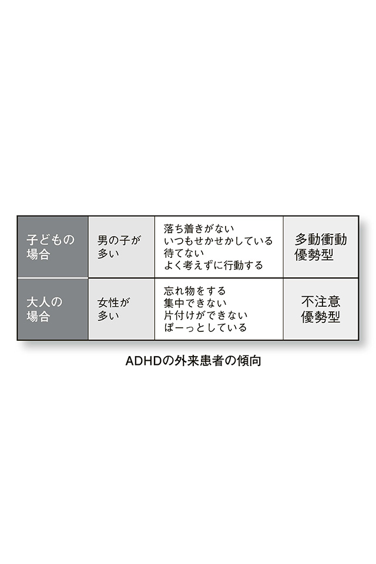
さらに、「大人になると女性の受診者が増える理由」に付け加えるならば、多動衝動性は、年齢を重ねるとある程度は落ち着いてくる、ということが挙げられます。
もちろん、不注意症状でミスを繰り返し、悩んで受診される男性のサラリーマンや教師の方もいます。男性に不注意優勢型がまったくないというわけではなく、相対的に女性が多いというわけです（だから、「片づけられない女たち」なのです）。
ＡＤＨＤがコミュニケーションにおいて問題をきたすパターンは、タイプによって違います。
不注意優勢型では「会話をしていてもうわの空ね。本当に話を聞いているの？」といわれることがよくあります。多動衝動優勢型では、話が次から次へと脈絡なく飛んでしまったり、人の話をバランスよく聞けずに、「自分が、自分が」と自分語りに終始してしまうことが多くなります。
いずれにせよ、タイプを見きわめて、理解を深めたうえで具体的対応法を探っていくことが大切です。コミュ障な人のＡＤＨＤ特性がわかれば、「理解に苦しむような行動」も、本人がわざとやっているわけでもなく、実は疾患特性によるものであると納得できますし、それなりの対応法もとることができるでしょう。
それでは、ＡＤＨＤ特性を持つ人たちに対する、周囲ができる対応法について、具体的に見ていきましょう。
ＡＤＨＤの多動衝動優勢型の人が、自分の興味のある話題について「自分語り」が止まらなくなったとします。そのような場合には、パーソナリティ障害のところで紹介した「時間の限界設定」を試みてみましょう。「君の話は非常に興味深いのだけど、今は時間がゆっくりとれないね、また今度にしよう」とか「あと５分したら仕事に戻らなければならないから、それまでなら君の話を聞けるよ」などといった対処です。
ＡＤＨＤの不注意優勢型の人は、時間にルーズであることが多いです。
まだ、仕事ではなんとか帳尻を合わせることができる人も、私生活になると途端に気が緩むのか、友達との待ち合わせに平気で遅れてきたりもします。「あの子は、仕事の時間は守れるけど、私との約束時間は無視する！」といった、時間感覚のアンバランスさも、周囲が理解に苦しむ理由の一つといえるでしょう。
症状が進んで、仕事でも締め切り設定がなかなか守れなくなった人には、まわりの人が、早めの締め切りを提示するのも一つの方法です。
また、仕事期間の途中をルーズに過ごし、期限ギリギリになんとかタスクを仕上げてしまうＡＤＨＤ特性の人も多いものですが、そのような場合は、内容の確かさのチェックが気になるところですね。
このような場合、期限ギリギリでも、ある程度きちんとした内容で仕上げることができているのであれば、もう思いきって、まわりが問題視すること自体をやめてしまうという方法もあります。
ここで大切なのは、ＡＤＨＤ特性を持つ本人と、仕事環境との関係性が、次の二点のどちらに当てはまるのかを考えることです。
・そもそも、本人の作業能力として、今の仕事はこなせないのか。
・それとも、本人の能力が、十分に発揮できていないだけなのか。
前者であるなら、職種、仕事内容自体を見直す必要があるでしょう。後者であるなら、まわりの人たちが手伝うことによって、能力を発揮できるかもしれません。
発達障害の人は、一度経験してうまくいったことについては、次回からは上手に生かして再現することができるのです。ただし、１を聞いて10 を知るなど、応用を利かせることについてはあまり得意ではありません。「前にこれを説明したから、今度はその先を読んでこれくらいのことはできるでしょう」、というような過剰な期待を周囲は抱きすぎないことが重要です。
実は、僕もＡＤＨＤ特性を顕著に持っています。子どもの頃は「忘れ物の王様」と呼ばれましたし、学校の机のなかはカチカチに固まったパンでいっぱいでした。部屋の片づけもできませんでしたし、大切な映画のチケットをなくすこともありました。
ただ、幸いなことに、困ったことをしでかしてしまっても、「勉強という得意分野」があり、人からは大目に見てもらえていたので、自信を失うこともなく、障害と診断されることもなく、大人になれたと思うのです。
僕は自分の特性がＡＤＨＤであると気づかないまま大人になり、精神科医になりました。そして精神科医としての臨床と研究をしていくなかで、「やんちゃで落ち着きのない子どもたち」と日々ふれあい、彼らに幼少時の自分を見つけたのです。
「僕の小さい時と同じじゃないか！」─そこで、ようやく自分がＡＤＨＤであることに気づいたのです。それからは、前述した「構造化」をキーワードに、自分の生活設計を進めていきました。
もう少しだけ、僕自身の話をさせてください。
僕は、日々の診療では、診断書や書類をためないように構造設定をしています。患者さんの目の前で、その人の分の診断書を仕上げることにより、片づかないという事態を招かないようにしているのです。
僕には、診療以外にも、執筆や講演などの仕事があります。講演は、レジュメ作成などいつもギリギリになってしまうのですが、それは完全に割りきっています。むしろ、「ギリギリでも講演に穴をあけることなく無事に仕上げて話をすることができた」ということに達成感を持つようにしています。
問題は、執筆です。これについてはそうとう試行錯誤しましたが、自分なりの構造設定を考え、なんとか自分なりのスタイルを持てるようになってきました。
「仕上げられる時にやってくれれば、原稿はいつでもいいよ」という、期限もほとんどないような自由度の高いタスクの処理は、僕にはできません。いつまでたっても未処理なまま、放置してしまうのです。このあたりのメカニズムは、片づけができないことと同じですね。片づけというのは対象が「モノ」であり、仕事が処理できないというのは対象が「タスク」であるわけです。
原稿を書くにあたり、僕の構造設定の課題は「原稿が書ける環境を自分でつくる」というものでした。
今は、ほとんどの人は原稿を書く時、パソコンで作業をしていることでしょう。パソコンに向かって一人で作業していると、ツイッターやフェイスブックなど、インターネットが非常に気になる方も多いのではないでしょうか。ちょっとだけ、とＳＮＳにはまり、気がつけば時間ばかりが過ぎている......。これを、「やる気の問題」に帰結させるのは簡単です。やる気がないからできないのだ、と。やる気を出せばよいのでは？と。
しかし、実は「やる気」に頼らない、「仕組みづくり」が大切なのです（この気づきには、経済評論家の勝間和代さんや、ノマドワークを提唱した本田直之さんの本が、大きなヒントになりました）。
僕にとっては、他人の監視（実際に、監視されているわけではありませんが）のもと、追い込まれて書き上げるのが非常に集中できるスタイルなのです。この「監視される状況に自分を置く」というのが、僕にとっての「仕組み」になりました。この原稿も、まとまった日にちをとって、この本の出版社・ディスカヴァーに「カン詰」になって、社内の執筆デスクで作業を進めました。
僕の執筆を例にとりましたが、「執筆に集中できない」「期限がないと原稿を仕上げることができない」というのを、一つの障害特性ととらえると、僕は、衆人環視のなかで書くという仕組み（環境）を用意することによって、これを克服したわけです。
コミュ障の人の場合も同様に考えることができます。コミュ障の人が「能力を十分に発揮できていない」可能性があることを考慮し、能力を発揮できる環境設定を用意することが大切です。コミュ障な人と、その周囲の人たちが、一緒に仕組みづくりを考えていくことが、双方の幸せにつながるのです。
ここまで読んで、「発達障害の人はなんてたいへんな症状や特性を持っているんだろう、社会でうまくいかないことも多くて苦労しているのだろうな」と、やや悲観的な感想を持たれた方も多いと思います。また、「発達障害の人と付き合う立場にある人は、苦労が絶えないだろう」と思われたかもしれません。あなたが、現に「その立場」にいるのであったなら、なおさらでしょう。
しかし、このような発達障害の特性を持つ人たちでも、その特性を上手に生かして社会で活躍している人たちはたくさんいるのです。
不況が長引き、社会に寛容性がなくなったといわれる現代。社会適応につまずきを感じている人が、ますます生きにくい時代になっています。
このような時代を生き抜いていくにあたり、「欠点を矯正して能力を伸ばそう」という観点では、限界があるのは明らかです。「欠点を矯正しよう」という観点には、弱者への思いやりがありません。しかし、反対に「能力を伸ばそう」という観点には、ゴールがないのです。
マイナスな面を無理にプラスにするより、よい面に注目して、できることを評価して伸ばしていく、そのような視点が必要でしょう。
たとえば、１００人の集団があるとします。その集団内では、必ず優劣が生じてしまいます。「売上の８割は、全従業員のうちの２割で生み出している」といった「80 ：20 の法則」（パレートの法則）はご存知の方も多いと思います。
では、その優秀な２割の人たちだけを集めて、１００人のグループを構成すると、どうなるでしょうか？ １００人の優秀な人たちによって、生産性が劇的に向上するのでしょうか？ 残念ながら、そうはなりません。優秀な１００人のなかでも、やはり「80 ：20 の法則」は適応されてしまうのです。
１００人という集団の、「８割の欠点」を矯正してみても、同じことなのです。
さて、ここでヒントになる考え方を紹介しましょう。マイナスも、ある点で突き抜けてしまえば、プラスになるという考え方です。疾患特性をたんなる「障害」とする考え方もあれば、疾患特性をつきつめて「才能」ととらえる考え方もあるのです。
自分の疾患特性を上手に利用し、活躍している人を、「gifted」（ギフテッド）と表現します。「天から才能を贈られた人」「天賦の才能を持つ人」といったニュアンスで使われています。
もともと、「gifted」という言葉は、海外の教育現場における用語でした。「gifted」を日本に紹介した、杉山登志郎先生（浜松医科大学特任教授、あいち小児保健医療総合センター医師）の書籍『ギフテッド 天才の育て方』（岡南、小倉正義と共著、学研）から引用しましょう。
「アメリカ合衆国では約二〇〇万人の子どもたちが、天才児のための特別支援教育プログラムを受けていることをご存じだろうか。（中略）
単に知的に高いグループだけでなく、才能をもち、さらに発達障害をももつグループもこの特別支援教育プログラムの対象となる。しばしば能力の峰は、ほかの能力の谷と一体となって生じるからである。ちなみに、このグループの子どもたちは、しばしば２E（twice exceptional children=二重に例外的な子ども）と呼ばれる。（中略）
一般に、突出した才能に関しては、天才"gifted"ということばが用いられてきたが、その後、才能"talent"ということばが用いられるようになった。また、突出した才能"outstanding talent" や、例外的な才能"exceptional talent"と呼ばれることも多い。
しかし筆者としては「与えられた天賦の凸凹」という意味を込めて、ここではギフテッド（天才）ということばを用いたい。」
日本の教育は、才能のある子どもへの公的教育は非常にプアであるといわざるをえません。ですから、優秀な子どもは海外へ行ってしまったり、私学での教育を受けるなどします。
また、せっかくの才能があるのに、それに周囲が気づかず放っておかれるケースもあります。放っておかれるどころか、その「才能」を「障害」としてしか扱ってもらえないことさえあるのです。
僕は、「機会の均等性、機会の公平性」こそが大切だと考えています。均等性、公平性のためには、凸凹のある個人個人の特性に合わせたサポートを行い、社会が個別性を理解したうえで機会を与えていく必要があるでしょう。特に、「才能」と「障害」が表裏一体である場合、疾患特性を持っているというだけで機会が奪われ、社会参加ができなくなる、集団からはじかれるような世界は、およそ健全とはいい難いものです。
作物も、肥沃な土壌と豊富な水と太陽の光がなければ育つことはできません。せっかくのよい種も、環境が整わなければ、そのポテンシャルを十分に発揮して成長することはできないのです。
テレビや舞台で活躍されている黒柳徹子さんが、小学校を退学になったのは有名な話です。黒柳さんが自らの子ども時代をつづった『窓際のトットちゃん』（講談社）によると、彼女は、そのあとに転入した個性を重視するトモエ学園のユニークな教育により、その才能を開花させることとなったのです。
次からは、黒柳徹子さんをはじめとする、僕がコミュ障だと見る「gifted」な人たちについて紹介していきましょう。凸凹のある人が、周囲から特性を認められ、自身のポテンシャルを発揮した時、どれだけ素晴らしい活躍をするのか、きっと驚かれるでしょう。
アナログな手帳管理が得意な人もいるかと思いますが、整理下手な僕は、毎年、手帳の入れ替えと過去の手帳の管理には頭を悩ませたものです。しかし、iPhoneの登場によって、この問題は過去のものとなりました。携帯端末でもパソコンでも、スケジュールが一元化管理されることにより、僕はストレスから解放されたのです。
多くの人が、iPhoneやiPadで（もちろんMacなどのパソコンでも）仕事や生活を激変させました。産業革命以来の大革命とも評価されるこのツールをつくり上げた天才が、アップル社の共同設立者の一人、スティーブ・ジョブズです。残念なことに彼は、２０１１年、55 歳という若さでこの世から旅立ってしまいました。
輝かしい業績をうち立てたジョブズですが、彼の人生はすべてが順風満帆というわけではなく、波乱に満ちたものでした。自らが立ち上げたアップル社からの追放、アニメーション会社ピクサーの経営、売却、そして自身を追放したアップル社への復帰。
誰もがなしえない業績を挙げた才能を有していたにもかかわらず、これほど生涯でその評価が分かれた人は少ないでしょう。これは、ひとえにジョブズ独特のコミュニケーション能力によるものだと思われます。
発達に障害がなく、誰とでも良好な人間関係を築いていたなら、自分が立ち上げた会社から追放されることもなかったかもしれませんね。また、他人より優れた思考を有しているだけならば、これまでのデバイスツールとはまったく違う、新しい発想の「尖(とが)った」ツールをプロダクトすることは不可能であったと思います。もしかすると、ジョブズ自らが、普通のコミュニケーションでは収まりきれない気持ちを抱えていたからこそ、iPhoneやiPad、iMacが生まれたのかもしれません。
僕は、彼のコミュニケーション能力が非常な偏りを見せるものであったから、ジョブズは天才と呼ばれ、後世に残る偉業を達成できたのだと思います。
「ジョブズの指示はあまりに細部にわたりすぎて、現場が混乱したり、失敗に終わってしまうことも、ときにはあった。
それでも失敗に懲りることなく、ｉＭａｃやｉＰｏｄの開発に際しても、やはり「僕の内部にあるもの」にこだわって、実にこまかい口出しをしている。」（『スティーブ・ジョブズ 人を動かす神 なぜ、人は彼に心を奪われるのか？』竹内一正著、 リュウ・ブックスアステ新書）
このような彼の興味の偏りと異常なまでのこだわりは、先ほど解説した「自閉症スペクトラム障害」の特徴にあてはまるところがあります。自閉症スペクトラム障害のコミュニケーションには、「回避型」と「積極奇異型」がありますが、あえて分類すればジョブズは「積極奇異型」になるでしょう。
回避型というのは、他人とのコミュニケーションを避けるタイプで文字通りイメージがしやすいと思います。では、積極奇異型とはどういうものでしょうか？『高機能自閉症・アスペルガー症候群「その子らしさ」を生かす子育て』（吉田友子著、中央法規出版）では、「積極奇異型とは、相手の意向に配慮せず一方的なかかわりをどんどんとってしまうことです（ローナ・ウイング、一九九六年）」と、紹介されています。
相手の気持ちを考えず、とにかく自分の主張を押し通す。その頑固なまでのジョブズのコミュニケーション術は「支配的コミュ障」と表現できるかもしれません。
ビジネスの世界では、メリットがデメリットを上まわれば問題はありません。ジョブズの「支配的コミュ障」は、協調性をもって会社内で働くにはデメリットであったでしょうが、ジョブズの独創的な思考を部下にトップダウンで伝え、猛スピードで革新的な技術を開発するという点では非常にメリットであったと思われます。
「ジョブズは絶対に、妥協したり、あきらめたり、相手の状況を考慮したりしない。常に「最善」を要求し続ける。
マッキントッシュの開発を行なっていたとき、ジョブズが開発チームに無理難題をふっかけて、週九〇時間働かせたというのはよく知られた話だ。」
「ジョブズは、滞っていた大型コンピュータのレンタル料金の支払いを求めるコール・コンピュータ社の社長アレックス・カムラートを、料金を払うからと事務所に呼びつけながら、「小切手はない。お前なんか地獄に落ちろ」と平気でののしる人間なのだ。数百万ドル規模の契約を一方的に破棄し、相手に多額の訴訟費用を使わせたうえでようやく支払いに応じることさえあった。部下が苦労して合意にこぎつけた内容を、気に食わないという理由だけで自紙撤回することも意に介さない性格なのである。
契約社会アメリカにおいて例外中の例外だ。」（『スティーブ・ジョブズ 人を動かす神』）
空気を読んだコミュニケーションを重視していれば、このような無茶な仕事を部下たちにさせられないでしょう。
ジョブズがコミュ障でなかったら、もしかしたら、マッキントッシュコンピュータやiPhone、iPadもつまらない妥協の産物となっていたかもしれません。
支配的コミュ障の達人であったからこそ、ジョブズは多くの伝説とプロダクトを残すことができたのではないでしょうか。
黒柳徹子さん─。彼女の名前を知らない日本人はいないでしょう。国民的人気番組である「紅白歌合戦」（NHK）の司会を５回も務め上げましたし、平日のお昼に放映されている「徹子の部屋」（テレビ朝日）は30 年以上続く長寿番組となっています。
最近では、お笑い芸人によるバラエティ番組でも徹子さんの独特の（というか、毒のある、相手の得意技〈トーク〉を封じる）コミュニケーション能力が「芸人殺し」と呼ばれ、非常に怖れられているとのことです。芸人が「怖れる」ということは、彼らの世界でいうところの「おいしい」（自分をきっかけに笑いが起きる）ことですから、お笑い芸人の新しい登竜門として、「徹子の部屋」に登場することが一種のステータスともなっているようです。
また、彼女が執筆した『窓際のトットちゃん』は１９８１年の出版以来、大ベストセラーとなり、大人から子どもまで、今でも読み継がれる大人気作品となっています。
『窓際のトットちゃん』は、徹子さんが小学生だった頃の様子を描いた自伝なのですが、ここに書かれている主人公「トットちゃん」（舌足らずだったので「徹子(てつこ)」を「トット」と発音していたそうです）の様子からは、まさにＡＤＨＤの行動特性が見て取れます。好奇心旺盛で何ごとでもやらないと気が済まないその特性から、初めに入学した小学校の先生が、困りはててトットちゃんのお母さんにこういいます。
「まず、授業中に、机のフタを、百ぺんくらい、開けたり閉めたりするんです。そこで私が、『用事がないのに、開けたり閉めたりしてはいけません。』と申しますと、おたくのお嬢さんは、ノートから、筆箱、教科書、ぜんぶを机の中にしまって、ひとつひとつ取り出すんです。たとえば、書き取りをするとしますね。するとお嬢さんは、まずフタを開けて、ノートを取り出した、と思うが早いか、パタン！ とフタを閉めてしまいます。そして、すぐにまた開けて頭を中につっこんで筆箱から"ア"を書くための鉛筆を出すと、いそいで閉めて、"ア"を書きます。ところが、うまく書けなかったり、まちがえたりしますね。そうすると、フタを開けて、また頭をつっこんで、消しゴムを出し、閉めると、いそいで消しゴムを使い、つぎに、すごい早さで開けて、消しゴムをしまって、フタを閉めてしまいます。で、すぐ、また開けるので見てますと、"ア"ひとつだけ書いて、道具をひとつひとつ、ぜんぶしまうんです。」（『窓ぎわのトットちゃん』）
やがてトットちゃんは、最初の小学校を辞めさせられてしまいますが、自由な校風のトモエ学園に転校し、自分の特性をスポイルされることなく生き生きと成長していきます。
徹子さんの「過活動」（ハイパーアクティブ、と専門的にはいいます）なコミュニケーションは、タレントとして活躍するようになってからも、たとえば司会をする時の、早口で饒舌にまくし立てる様子によく表れています。
そのコミュニケーション術は、一般人とくらべると「適切なバランスの会話量」とはいえないでしょう。とにかくマシンガンのようにしゃべることもしばしばですから、ゲストのタレントや、時には視聴者さえ、その会話のスピードについていけなくなることもあります。
これはある意味、「行き過ぎたコミュ障」といえるでしょう。では、なぜ「徹子の部屋」が続くのでしょう？ 最近でも、レディー・ガガなど世界のスーパースターが出演するくらいの人気です。なぜ、彼女の会話は「行き過ぎている」にもかかわらず、人を惹きつけてしまうのでしょうか？
それは、徹子さんが、ゲストの一挙一動に興味津々であることが、視聴者にも、対談の相手にも明白であるからです。気持ちいいくらい、彼女の頭のなかは「好奇心」でいっぱいです。対談している相手からすれば、エネルギーあふれるハイパーアクティブな彼女の好奇心が、自分に一身に向けられているのです。こんなにうれしいことはないでしょう。
また、徹子さんは、「徹子の部屋」ではしゃべるだけでなく、とても聞き上手でもあります。なんでもやりたがり、出たがりが過活動の特徴ですが、このあたりのバランスは絶妙です。これは、生来、持って生まれた才能というよりは、長年のタレント活動によりトレーニングされ学習したものかもしれません。彼女は「徹子の部屋」という「場」をしっかりと把握しているのです。
それが、いったん「場」を離れると、暴走してしまうこともあります。実際、「笑っていいとも！」（フジテレビ）のテレフォンショッキングというコーナーにゲスト出演した時（１９８４年）は、番組の半分以上を延々しゃべり続け、予定されていた他のコーナーを飛ばしてしまうという過剰コミュ障ぶりを発揮しています。
最初からコミュニケーションがうまくいく人はいません。行動し、継続し、学習することが、「欠点」になりかねないその人の特徴を「魅力」に変えることができる。それを具現化している稀有な存在が黒柳徹子さんなのです。
芸能活動にとどまらず、長年、ユニセフ親善大使として活動する彼女の行動範囲の広さも、彼女の過活動を表しています。ボスニア・ヘルツェゴビナやアフガニスタンなど、いまだに地雷が埋まる内戦地帯を訪問し、飢えや病気に苦しむ子どもたちを、徹子さんは支援し続けてきました。
彼女は、過活動コミュ障だからこそ、自分に自信を持って生き生きと過ごし、国内外から尊敬されるような大活躍ができるのです。
勝間和代さん─。ビジネス書、自己啓発書分野でヒットを連発するベストセラー作家です。作家活動に飽きたらず、最近はBS放送の「デキビジ」（BSジャパン）で司会業にもチャレンジしています。文筆活動やコスプレ、メルマガの発行、スカッシュやバイクへのチャレンジなど、彼女も黒柳徹子さんに負けず劣らず過剰ともいえる挑戦、コミュニケーション量を有しています。
勝間さんのように、新しいことに興味を持ってチャレンジし続ける行動は「新奇探索行動」と呼ばれ、発達障害、特にＡＤＨＤに見られるものです。もちろん、社会適応は良好なので、ＡＤＨＤと診断されることはありませんが、その特性はコミュニケーションの量はもちろん、質的なところにもよく表れています。具体例を挙げてみましょう。
ある日の「デキビジ」では、ややぎこちないながらも「さわやか風」の笑みで視聴者への最後のあいさつを行い、つつがなく番組を締めた、と思いきやその直後にニコリともしない真顔で番組を終えました。余韻を残さない切り替えの早さ、おそらく、時間通りにあいさつを終えて番組を締めることに意識があったのだと思うのですが、その奇妙なコミュニケーション表現はやはり独特といわざるをえないものでした。
ぎこちない笑顔と表情の硬さに加え、あまりに合理的、デジタル的なコミュニケーションは発達凸凹的特性を彷彿とさせるのですが、ただ彼女の柔軟性、変化への適応能力には特筆すべきものがあります。硬い表情で番組エンディングのあいさつをしていた同一人物とは思えない『結局、女はキレイが勝ち』（勝間和代著、マガジンハウス）のカバー表紙で見せた満面の笑み。表情一つとっても、研究に研究を重ねてつくり込んで自分のものにしてしまう積極性は、見事としかいいようがありません。
新奇探索行動はＡＤＨＤ的な特性ですが、デジタル的コミュニケーションはアスペルガー的でもあります。彼女がそのような極端性を持ちながら大活躍している一番の要因は、彼女自身が自分のことを客観視し、誰よりも自己理解に努めていることにあるのではないでしょうか。
また、こだわりの強さという特性を、「一度決めたルールは崩さずに習慣化する」というようによい方向へ上手に生かしています。その一つが、３６５日一日も欠かさずに発行する彼女のメルマガです。
実は、僕もこのメルマガを購読しているのですが、ここまで自らのこだわりを純化して、アウトプットに転換する貪欲さにはつくづく感動してしまいます。
発達障害傾向の人たちの落ち着きのなさやこだわりは、ややもすれば「空気を読まない一方通行のコミュニケーション」と受け止められますが、自身を客観視して代替行動へ転換することができれば、それは一つの武器となりえるのです。
世間の人が勝間さんを語る時は「効率化」「合理化」というデジタルな側面ばかりが強調される傾向があります。彼女の集中できる才能、たとえばダイエット企画での達成力などは「gifted」としての才能を思う存分発揮したものでしょう。
しかし、彼女の魅力は、実はＡＤＨＤ的な不注意行動、デジタルとはアンバランスないい加減さにより発揮されていると僕は感じています。「カツマー」と呼ばれるファン層も、デジタル的な部分より、そのようなアナログ的なところに惹かれているのではないでしょうか？
たとえば、勝間和代さんの親しい友人である和田裕美さんが、ブログで勝間さんの面白エピソードを紹介しています。まさしく、発達凸凹の人の「愛される行動特性」が表れているなぁ、と思わず感心してしまいました。
「初めて会ったのはある本田直之さんが主催する著者の会だったのですが彼女は、パーティなのに自転車できたせいかなんか、登山帰りみたいな格好でしてさらに、ウエストポーチをしていて、着飾った人ばかりの中でかえって私には印象的でした。」（和田裕美公式ブログより）
他人の視線を気にしない、マイペースなところがよく表れていますね。着るものに無頓着、TPOを気にしない、というのはまさしく凸凹です。できる女なのに、無頓着。このアンバランスさがたまりません。
「そのうえ、もともと和代ちゃんは愛想を振りまけない人だから無愛想で怖かった（笑）だから声をかけにくい雰囲気だったけど興味のほうが強くて人見知りの私が思い切り勇気を出して声をかけたのです！」
「はじめて二人でランチしたのは彼女の指定したパスタの店。効率化という人だからすごい時間厳守で正確な人かと思って緊張して、待ち合わせの店に珍しく10 分前にいったら和代は30 分遅刻してきた!! なんとお店を間違えていたらしい！自転車にナビがついてるやろ！とつっこみたい気持ちにかられながらもみかけによらずおっちょこちょいな人なのだと思ったのでした。」（同ブログより）
不注意満開ですね。
発達凸凹、gifted的な才能が表れているエピソードですが、成功モデルとして彼女の生き方は、精神科医としておおいに興味があります。
勝間さんのモデルを、脳科学的に検証してみましょう。
ＡＤＨＤの成り立ちには、さまざまな仮説があります。なかには「Triple Pathway」仮説というものがあり、これは脳のさまざまな神経伝達回路のうち、三つの経路が重要というものです。
三つの経路とは、「報酬系」「実行機能系」「時間処理系」です。
報酬系というのは、ご褒美によって強化されます。人はほめられた経験によって次も頑張ろうと思いますね。「快」によって、この回路はより強く働くようになるのです。
時には、報酬系は不適切に働くこともあります。麻薬依存患者などにおいて、覚せい剤の快により報酬系が強まり、覚せい剤がやめられなくなる、というように。しかし、適切に報酬系が働けば、適切な行動の強化につながるのです。
実行機能系というのは、前頭葉（脳の前のほうです、おでこのあたりにあるとイメージしてください）機能の中心を担っています。
これは、先を読んで、優先順位を決めて、手際よく進めていく能力です。発達障害の人は、ここの機能調整がうまく働かないことが知られています。発達障害以外の多くの人でも、老年期にも実行機能は弱まりますし、飲酒などの影響も受けやすい機能です。
時間処理系には、実行機能系同様に先を読んだり、また「衝動的に動かずに待つ」という働きがあります。発達障害の人は、自分に興味のないことだと、時間処理系がうまく機能しないこともあります。
勝間さんの脳では、報酬系と実行機能系が上手にコラボレートして、前頭葉の機能が非常に高まっていると考えられます。やりたいと思うことをやっているから楽しいし、成果が出るとわかっているから、少々苦しくても我慢することができるのです。
苦労は、すでに報酬系回路が強化されて快に変わっているので、そのために必要な手順を、実行機能の働きにより手順よくこなしていくことができます。
勝間さんの場合はうまくいっていますが、自分の苦労が報われて快の感情になる、快の報酬が得られるという「よいフィードバック」を獲得していない人だと、この報酬系と実行機能系の回路をうまく調整することができず、苦労が苦労のままで、何もやる気が起こらない、という事態におちいってしまいます。
つまり、「先の快を想像して、今を過ごせれば苦労は楽しくなる。しかし、苦労をしても快という形でフィードバックを得られない人は、我慢する力が育たない。衝動性が改善しない」ということになります。
これを、子どもの教育にたとえてみましょう。
子どもに対しては、「頑張った」ことをしっかりほめなければいけません。子どもは、よい結果を出しても評価が得られないとなると、「どうせ苦労して勉強してもダメだ。どんなに勉強を頑張ったところでほめてもらえるわけじゃないし」という、あきらめが癖になってしまうのですね。逆に、頑張ったことによってほめられた、うれしかった、という感情が定着すると、勉強のツラさも苦にはならなくなるでしょう。
数々の才能あふれる作品を世に残し、26 歳で早逝したロックミュージシャンの尾崎豊さん。作品は一流でしたが、人間としての生き方は非常に不器用でした。
そもそも音楽や美術、芸術というアートの世界においては、真剣に活躍する人たちにとって、「中庸」という言葉は無意味です。良いものは良い、ダメなものはダメという、極端なオールオアナッシングの世界なのです。
そんな世界で自己を表現するアーティストには、「境界性パーソナリティ障害」としての特性を持っている人はたくさんいます。
精神疾患の診断基準である、ＤＳＭ―Ⅳによると、境界性パーソナリティ障害は次のように定義されています。
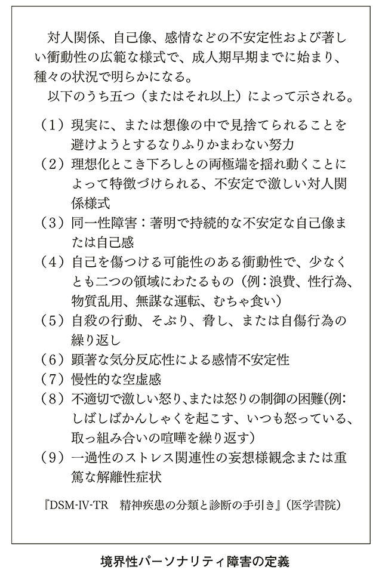
どうでしょう、薬物依存などの自己破壊的な行動を繰り返し、多くの友人やスタッフが付いては離れていった彼に、まさにあてはまるのではないでしょうか。
どれだけ評価されても満たされることのない「自己不全感」。いつか、自分は世の中から見向きもされなくなるのでは、という「見捨てられ不安」。そういった特性ゆえ、周囲から理解されないままに年月が経つと、悲劇的な結末を迎えてしまう尾崎さんのようなケースは起こります。
尾崎さんは、早朝に、全裸で傷だらけのまま泥酔状態で発見され、一時は病院に運ばれましたが、その後、帰宅しました。しかし、眠ったり暴れたりを繰り返し、突然、危篤状態となって緊急病棟に運ばれ、蘇生措置のかいもなくそのまま亡くなりました。
もし、彼が、境界性パーソナリティ障害という性質を周囲から理解されていたら。本人も自分の疾患を自覚し、まわりの人たちも彼に適切な距離感で、構造化をもって接することができていたら。悲劇的な結末を迎えず、クリエイティブに今も作品を残し続けていたのではないでしょうか。
芸術家が、自分を極限まで追い込んで、追い込んで、作品を残していく。そんな風潮がもてはやされるのは、古い時代のこととなったのかもしれません。尾崎さんは、その古い時代を象徴するカリスマアーティストであったといえるでしょう。
かつては、漫画といえばフィクションがほとんどでしたが、最近は自分の日常生活を漫画化する作家も珍しくなくなりました。それぞれの作家の人となりを、リアルな人間観察としてとらえることができるので、精神科医として僕はそのような作品が大好きなのです。
福満しげゆきさんは、そのなかでも、僕が特に好きな漫画家さんです。かなり以前から注目していたのですが、『うちの妻ってどうでしょう？』（双葉社）で第14 回文化庁メディア芸術祭マンガ部門奨励賞を受賞し、知名度が一気に上がりました。
彼の漫画は、自分の日常を切り取っていますが、とにかく不安感が強いのが特徴です。「僕」と「妻」と「子ども」の日常を描いていくなかで、妻が買い物から帰って来るのが少し遅いだけで、すぐに「交通事故にあったのでは？」という強い不安発作が起こるさまなどが描かれています。これは、社交不安障害のところでも述べた「予期不安」と呼ばれるもので、起こってもいないのに最悪な事態を想像して不安になることを指します。
福満さんが素晴らしいのは、漫画を描くということで、不安をある程度昇華しているところでしょう。
不安障害の治療では、「行動療法」というものが用いられます。これは、電車に乗っている時に事故が起こったらどうしよう。お腹が痛くなったらどうしよう。と、心配ばかりしている患者さんに対して、「とにかく各駅停車で一駅でもいいから電車に乗ってみよう」と、行動をうながしていく療法です。
一番ひどい時の症状を「10 」として、行動を起こした時の感情を自己採点してもらうセルフモニタリングをし、「自分を客観的に見ていく」練習をしていくのです。
彼にとっての行動療法は、彼の仕事である「漫画を描く」ことでしょう。自身の思考や行動をセルフモニタリングして漫画に描くことにより、その行為自体が一種の自己治療になっているわけです。
「稼げなくなったらどうしよう」、と強い不安を感じながら、追いつめられるようにして、つべこべいいつつも執筆し、しかも売れるようになってきているので、治療効果はかなり高いといえます。
あまりにも売れて不安が解消されすぎると、彼の漫画の面白さがスポイルされるかなと、密かに僕は危惧しているのですが、不安というのは、つぶしても、つぶしてもなかなかなくならないものです。
不安障害をメシのタネにし、自分の仕事である漫画によって自己治療する漫画家として、福満さんには今後も大活躍していただくことを、一ファンとして期待しています。
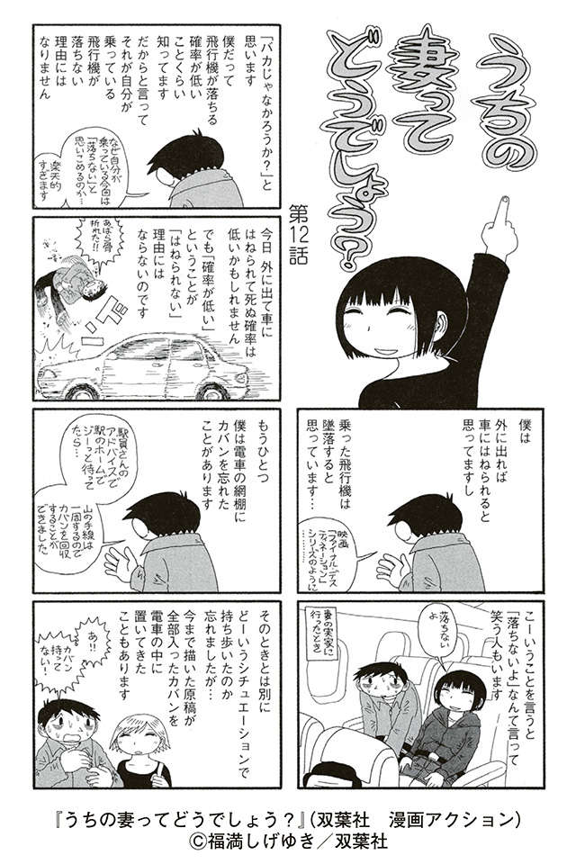
あなたのまわりのコミュ障な人たちも、発想を変えて見ると、「話の通じない人」「何もできない人」「イライラさせられる人」から、「天から与えられた才能を持つ（持つかもしれない）人」と、とらえ直しができることは、おわかりいただけたでしょうか。
とはいっても、ジョブズのような人に無理難題をふっかけられたりする「困ってしまう状況」は、コミュ障な人と付き合ううえでは、避けて通るわけにはいきません。
そこで、大切になってくるのは、さまざまな困ったケースへの上手な対応法を知ることです。対応法を心得ておけば、あなた自身にも余裕が出て、相手への見方も、ネガティブな「困った人」から、「個性的な人」さらには「魅力的な人」へと転換できるでしょう。
精神科医は、日々の診療のなかで、患者さん本人を治療しています。しかし、患者さん本人に接しない場合というのも、実はあるのです。
それは、たとえば、家族のなかにコミュ障な人がいて、対応に悩んでいる親や子、兄弟、姉妹。また、会社の部下の、一見するとめちゃくちゃな勤務態度にどうしていいかわからない上司などです。
コミュ障な人の「周辺にいる人」からの相談を受けるなかで、「よくあるケース」というのが、僕には見えてきました。それらをいくつかご紹介することによって、あなたが、コミュ障な人と付き合う場合の手助けになればと思います。
これらの「よくあるケース」を理解していれば、もし、明日の仕事でジョブズに「iPhoneのデザインを中身から全部つくり直せ」といわれても、あわてふためくことにはならないかもしれませんよ。
「部下がうつ病のようだが、メンタルクリニックを受診してくれるだろうか。どうすればいいか？」
厚生労働省主催のうつ病・自殺対策講座で、企業の管理職の方を相手に講演していた時のことです。ひと通り話を終えると、何か質問はありませんか？との司会者の呼びかけに、ある人物が挙手されました。
Ｆさん 48 歳男性、不動産業で管理職をされている方です。
＊
「一昨年、入社したばかりの男性の部下なんですが、最近、仕事の効率が悪いのです。表情も冴えないし、会話もまったく弾まない。入社したばかりの頃は、もう少し話ができるヤツだったんですが。どうもうつ病っぽいんですよね。どうしたもんですかね？」
──なるほど、それは心配ですね。ところでメンタルクリニックの受診はされていないんですよね？
「そうですね、プライベートなことを聞きにくいというのもありますし。ただ、他の部下からの話では、過去にメンタルクリニックにかかっていたこともあるといっていたそうです。もっとも、詳しい話はわからない、とのことでしたが」
──うつ病なのか、それとも躁うつの波がもともと激しいのか、他に精神疾患があるのか、その情報だけではなんともいえないですね。ただ、メンタルクリニックへの受診をうながしたほうがいいのはたしかでしょう。たとえば奥さんに相談してみるのはいかがでしょう？
「それが、彼は独身なんですよ。一人暮らしで、親も遠方なので、そう簡単に様子を見に来ることもできないみたいです。まだ、親御さんには連絡はとっていませんが」
──それでは一般論的なことしかいえませんね。なので、どうすればメンタルクリニックを受診してもらえるか、というところを目標にしましょう。
まずは本人に、上司として心配していることを伝え、メンタルクリニックへの受診をうながしてください。そして、自分も一緒に受診について行けるということも伝えましょう。
本人だけで診察に行くのはあまり好ましくないですね。自分が病気であるという認識があいまいである場合、「上司に無理やり受診をすすめられたから来ました。僕はなんの問題もないと思っているんですけどね」と訴えてしまうでしょう。勘の悪い精神科医だと「ああ、じゃあそれは上司の考え過ぎなんでしょうね」と、１回の診察で終わってしまう可能性がありますから。
「なるほど。一緒に受診した時に、会社での状況を伝えるということですね」
──そうです。そしてできるなら、メモにまとめて診察時に医師に渡すといいでしょう。本人以外の周囲の方から、細かい話を長々とされるのを嫌う医師もいますから。また、その場ではうまくいいたいことを伝えられない可能性もありますよね。ですからメモにまとめるのがベストですよ。
「問題は、すんなり受診してくれるかどうか、ですよね」
──たしかに、そうでしょうね。その場合は、客観的な数値や証拠を提示したうえで、受診をすすめてみてはいかがでしょう？
「客観的な数値、証拠ですか？」
──そうです。たとえば業務の効率が落ちているなら、具体的に何パーセント効率が悪化しているとか、ミスがいくつ増えているとか、そういう具体的数値を本人に提示するのです。健康診断などで、体重減少などのデータがあるならそれもいいでしょう。うつ病なら食欲不振、体重減少が見られることが多いですね。もっとも、ストレスからドカ食いして体重が激増する人もいます。体重「減少」だけでなく、体重「変動」を見るといったほうがいいかもしれません。
数値を提示して客観的な根拠を示す。もしくは、次にミスをしたり、おかしなことがあったりしたら、やはりメンタルクリニックを受診してもらうと事前に予告するのです。ただし、ここで大切なのは、あくまで上司である自分が君のことを心配している、というメッセージを送り続けることです。うつ傾向のある人は自分のことを矮小化し、被害的にとらえる傾向があります。
メンタルクリニック受診をすすめられたら、「自分は邪魔者扱いされた」と事態がますます悪化することにもつながりかねませんから。
「なるほど、わかりました。ちょっとすすめてみます」
＊
この後、しばらくして、Ｆさんと部下の方は一緒に僕のクリニックを受診されました。以前から躁うつの波があり、メンタルクリニックを受診していたこともわかりました。診察の結果、親との関係性など生育環境にも複雑なものを抱えており、単純なうつ病とはいい難いものでした。
周期的なうつ状態と躁状態の波に対して、向精神薬を処方しました。状態がある程度改善し、自分の心と向き合う余裕が出てきたのを見て、僕のクリニックと提携しているカウンセリングルームを紹介し、カウンセリング療法を開始しました。上司の方も、本人の状態を理解したうえで、一時的な勤務負担軽減を行うなど環境調整に協力してくれました。
周囲の尽力もあり、本人なりに自分の過去と向き合い、これからのことを前向きに考えていこうという治療意欲も見られてきました。その後は、薬物療法は中止してカウンセリング療法のみ継続しているようです。
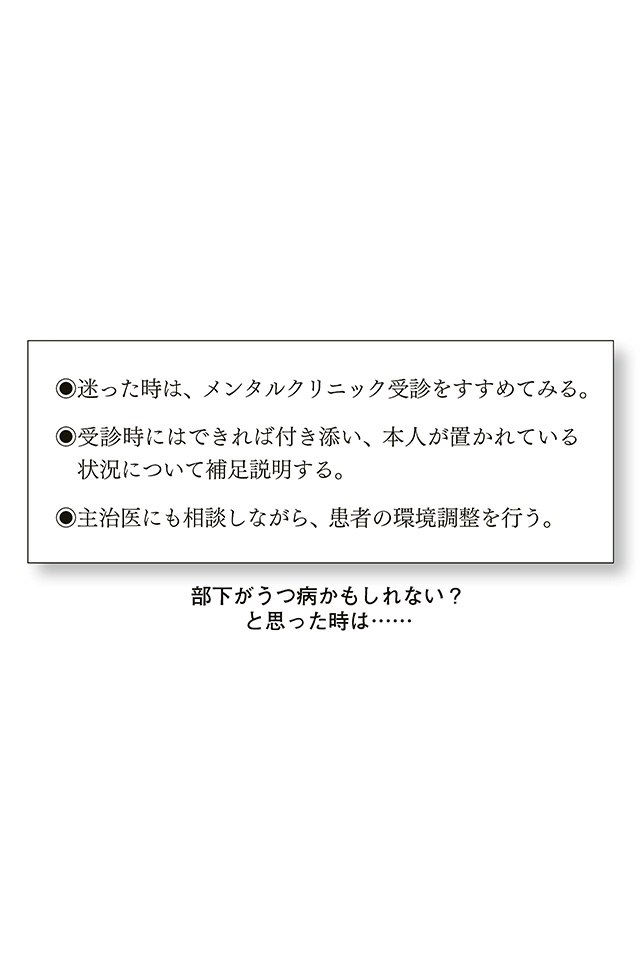
またある時、Ｆさんと同様に企業管理職の方からの相談がありました。部下はＧさん、30 歳男性、会社は建築業。それなりの大企業です。彼自身は建築業務ではなく、従業員の健康管理業務のための、産業保健師として採用されました。
相手の話は一応聞けるのですが、産業保健師の業務である、具体的な健康へのアドバイスなどができない。そのあとのカルテ整理がまったくできない、記録のないまま放置されたカルテがどんどんたまっていく。また、人の言葉の裏が読み取れない、言葉通りに受け取ってしまう。訪問してくれた人が「つまらないものですが」とお土産をくれた時は、「つまらないものなら渡さなければよいのに」と思ってしまった、とのこと。
人とのやり取りができないまま、働きはじめて１年以上経つのに、状況が改善される見込みがない。
やはり受診してもらって診断をしたほうがよさそうなので、その旨を伝えました。ほどなく上司の方と一緒に、Ｇさんは私のクリニックに来ました。
診察時の様子では、表情は変化に乏しいのですが、うつ状態とは違う印象を受けました。うつ状態の人からは、気分が落ち込んでいる、沈うつ的であるということがわかるのですが、Ｇさんの場合は、沈うつ的というよりは「表情がない」という表現が適切といえるものでした。
これまでの仕事上でのエピソード、対人コミュニケーションがうまくとれないこと、診察時の表情などから、第一印象としてはアスペルガー障害などの発達障害を疑いました。
続いて、両親にも来てもらい、生育歴の確認を行うとともに、心理発達検査も施行しました。
幼少時はあまり手のかからない子どもだった、友達は少なかったが両親に迷惑をかけることもなかったので、特に気にせず様子を見ていたそうです。小学生の時はポケモンカードの収集に夢中になり、一度、お気に入りのカードが見つからなかった時は大パニックになったとのことです。
心理検査では、知的機能の遅れは見られなかったものの、言語能力検査の高さにくらべて動作能力検査が顕著な落ち込みを示していることが指摘されました。この差、偏りを専門的用語で「ディスクレパンシー」と呼びます。
診察の結果から、アスペルガー障害と、不注意症状をメインとするＡＤＨＤを合併していることがわかりました。
Ｇさんの場合、上司が非常に協力的な方でした。毎回診察に付き添って来たので、その都度、対応法をアドバイスしました。
Ｇさんには問題が山積みでした。産業保健師としての業務には、看護師業務も含まれます（保健師になるには、看護師の資格が前提となります）。この看護師業務ができないのです。包帯の巻き方がわからない。一度、巻き方を教えても、怪我の部位が変わると対応できない、という状況です。
「それでよく看護師免許が取れたものだ」と思われる方も多いでしょうが、看護師国家試験はペーパー試験、それもマークシート方式です。あらかじめ用意された選択肢から正答を選んで解答することは、アスペルガー障害の人は結構できてしまうのです。
結局、Ｇさんは精神障害者保健福祉手帳を取得し、障害者雇用枠で再雇用されて事務職で働くことになりました。その後は、表情や感情の表出も徐々に見られるようになったそうです
Ｇさんのように発達障害特性を持つ人の場合は、本人への治療アプローチには限界があります。本人の治療よりも、周囲の人の援助・理解がより大切になってくるのです。
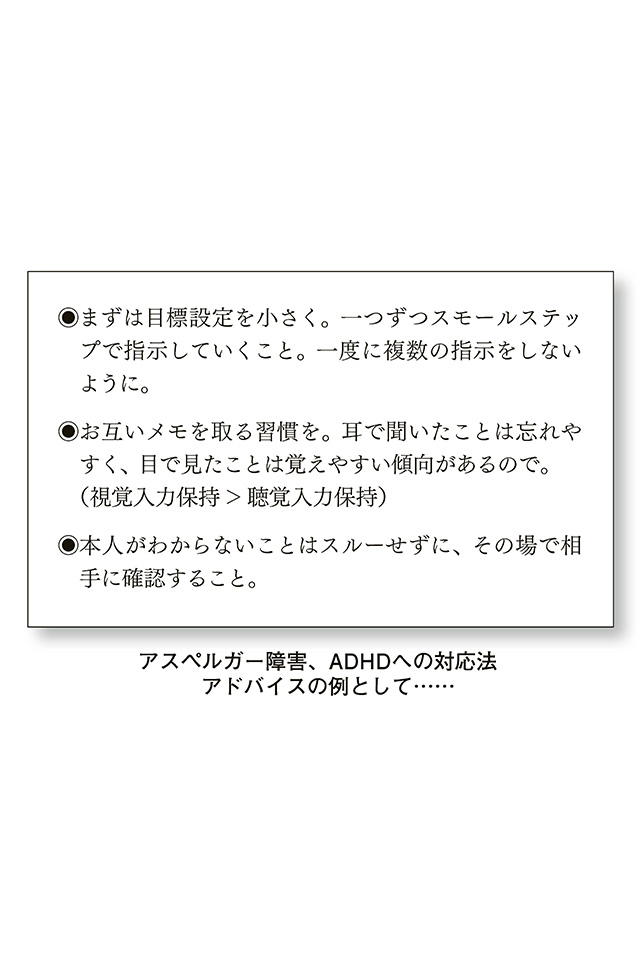
子どもが不登校である。どうすれば学校に行けるようになるか？ 子どもがひきこもっている。どうすればよいか？
このような相談も、とても多く受けています。特に思春期くらいの子どもを持つ親御さんの悩みは深いものがあります。診察室にやって来たお母さん、Ｈさんのケースです。
＊
──こんにちは。今日はどうされましたか？
「小学５年生の娘のことで悩んでいます。学校に行かないんです」
──なるほど、お母さんとしてはつらいですね。
「どうして行けないのか、前の日は「明日こそ学校に行くから！」と、ランドセルに時間割通りに教科書を入れて準備を万全にするのです。ランドセルを枕元に置いて寝ることもあります。でも、朝になると同じことの繰り返しです」
──やっぱり学校に行ってほしいですか？
「そうですね、このままだと勉強もどんどん遅れてしまいます」
──休みの日はどうしているのですか。
「普段の日は、学校がある時間帯は外出するのも嫌がります。以前、外で知っている人に会って『学校はどうしたの？』といろいろ聞かれたことがあって、それが鬱陶しいようです。休みの日は、外出するのはそれほど嫌がりませんね。一緒に買い物に行くこともあります。好きなものを買ってあげるから学校に行くのよ、と約束させたこともありますが結局ダメでした」
──今日は受診するのは嫌がりましたか？
「もう絶対イヤ！って。泣き叫んだりするものですから、私一人でうかがいました。もうどうしていいのかわかりません」
＊
幼稚園、小学校低学年くらいの子どもは、親にいわれるがままに受診するのですが、小学校高学年から中学、高校生くらいになると、やはりメンタルクリニックへの受診には抵抗が出てくるようです。
Ｈさんのような場合、困りはてた保護者だけでメンタルクリニックにやって来ることがしばしばあります。その多くは、不登校やひきこもりの相談です。
不登校、ひきこもりというのは、社会とのコミュニケーションにおいて問題があるという状態なのですが、あくまでこれらは「状態」にすぎません。
「不登校」「ひきこもり」は、表面的に見えている「状態」であって、その根本にはなんらかの疾患が隠されている場合もあるのです。たとえば、発達障害などによりコミュニケーション不全を呈しているのか、うつ病により意欲が低下し学校に行く気力がなくなっているのか、それとも統合失調症のような幻覚妄想を呈するような精神病状態になってしまっているのか？
解明には、やはり、子ども本人の受診が必要になります。Ｈさんのように、それがなされない場合は、僕は、とりあえず一般的なアドバイスをするだけにとどめています。
まずは現状の見きわめを
生理的に、あるいは身体的にはどのような状態を呈しているのか。ご飯は食べているのか、睡眠はとれているのか。このチェックにより、症状重症度や緊急性がひとまずわかります。
ご飯もおいしく食べられている、睡眠も規則正しくとれている、学校には行けないのだが家庭での会話は普段通りにできている、という状況であるならば、まず緊急性はないでしょう。対応を考えてあげることで、症状は好転する可能性があります。
強制的なかかわりは、様子を見て、ひかえるべき時はひかえる
不登校の場合には、学校に行くことを強くすすめたり（昔は「登校刺激」という言葉を使いました）、ひどい場合は、無理やり車に押し込んで学校の門まで連れて行く、といったケースがあります。門の前で強い抵抗にあって、結局は登校をあきらめざるをえなくなることにも。こういった強制はひかえましょう。
家庭内で、通常通り、リラックスできることを目標にする
「子どもは何も考えていないように見えます、のんきにテレビを見ていたりすると、親としてどうにかなってしまいそうです。こっちが悩んでいることなんて何もわかっていないように思えます」と、診察室でせつせつと訴える保護者も多く見られるのですが、葛藤を感じていない不登校の子どもなどいません。
子どもは、学校に行かないといけないのはわかっているのだけれど、どうしても行けなくて悩んでいるのです。家でのんきにテレビを見ているように思える姿は、自分のつらい状況に正面から向き合う（「直面化」といいます）と、心が壊れてしまうので、安全弁としてそのような行動を選んでいるにすぎないのです。
学校に行けないことがつらい、学校には居場所がない、そのうえ、家でも落ち着けないとなると、子どもの心は壊れてしまいます。家庭ではリラックスさせてあげて、本人の気持ちに共感してあげることが必要なのです。
＊
その後のＨさんですが、どうなったでしょう。
──ああ、お久しぶりですね。あれから調子はいかがですか？
「そうですね。あいかわらず学校には行っていませんね。でも、先生に『とりあえずは、学校に行くことはあきらめてください』といわれてちょっと吹っ切れました。最初はショックでしたけど......」
──お嬢さんは自宅ではどうですか？
「父親もガミガミいうのをあきらめたみたいで、本人もわりとリラックスして過ごしているようです。そういえば最近、学校の友達が放課後には遊びに来てくれるので、たまに遊ぶこともあります」
──ああ、それはいいことですね。
「でもそうやって遊んでいる姿を見ると、どうして学校に行けないのかな、そろそろ行けるんじゃないのかなと、ちょっとまたあせってしまいます」
──「あせらず」の姿勢ですよ。せっかく家庭での親子関係もよくなってきているので、これを維持していきましょう。「よくなりかけ」という時が要注意です。あせって一気に距離をつめると、子どもの心は敏感に感じ取りますよ。「やっぱり私のことをわかってくれないんだ」と。
「学校のことは、何もいったらダメなんでしょうかね」
──いえいえ、腫れ物に触るような対応をする必要はありません。お母さんも我慢し過ぎずに、いいたいことは声かけくらいでいいからいっていいんですよ。ただし、本人が嫌がっているにもかかわらず、強制的な声かけでもって延々と働きかけ続けるのはよくないということです。
「そうですね、わかりました」
──「見捨てない程度のあきらめ」、くらいのスタンスで見守ってあげてくださいね。
「はい......。ぼちぼちですね。頑張ります」
──頑張り過ぎなくていいですよ。
「ああ、そうでした、ついつい『頑張る』が口ぐせになっているかもしれません」
数回の相談を経て、Ｈさんは当初の困りはてた表情から、憑き物が落ちたような表情に変わりました。その後は相談には来ていませんが、中学校の先生から聞いたところ、娘さんは、ところどころ休みながらも学校に登校できるようになっているとのことでした。
最近、教職員のうつが増えています。２０１０年度のデータでは、10 年前とくらべて２・４倍に増加しており、休職者のなかで精神疾患によるものは60 パーセントを占めています（平成22 年度 文部科学省調査）。
これまで見てきたＦさん、Ｇさん、Ｈさんは、自分は患者ではないけれど、コミュ障な人に困ってしまい、相談してきたというケースです。しかし、教師の場合は、自らが患者となってクリニックを訪れることが多いといえます。
その背景には、もともとは病気ではなかったのだが、あまりにもコミュ障な人たちに困らされた結果、ついに自分がうつ病になってしまったという状況があるようです。
教職員のうつ病には、原因となる出来事がさまざまです。いや、そもそも、「原因があってうつ病になるのか」ということ自体を、考えなくてはいけないでしょう。
「原因」と思われるものは「きっかけ」にすぎないこともあるのです。うつの原因やきっかけを特定することは非常に困難です。
人の心を、コップにたとえてみるとわかりやすいと思います。コップに注がれる水をさまざまなストレスとしましょう。
ストレスのない人はいませんから、空のコップの人はいません（もっとも、ストレスは悪いものばかりではありません。ストレスがあるからこそ、人は心に余裕を持って準備をおこたらずにすごすことができるのです）。
さて、人の心がもしも透明なコップなら、他人からは中身はお見通しですね。でも実際は、そうではありません。人の心は透明なコップではないので、時折、水がコップに注がれていたとしても、実際にどの程度、水がたまっているのかは、他人からは測ることができないのです。
ある程度、コップに水がたまっているところに、いつもより多めの水が注がれたなら、コップから水はあふれてしまいます。この場合は、コップから水があふれたのは、最後に注がれた水が原因でしょうか？ いいえ、最後に注がれた水はきっかけにすぎないでしょう。でも、水がある程度たまっていたということがわからなければ、最後に注がれた水が原因だととらえられてもやむをえませんね。
では、最後に水を注ぎさえしなければ、あふれることはなかったのか？ そうではありません。日々注がれた水を、定期的に排水する、つまりストレスを解消するプロセスが大切だったのです。
教師のストレスコントロールは非常に困難です。多感な児童や生徒たちを相手にするという職業自体が、たいへん気を使うものです。人間相手に真剣勝負で挑まねばならない仕事です。「教師一人」対「クラスのおおぜい」という状況も負荷になります。
さらに、さまざまな日々の準備もおこたることはできません。授業の準備、試験の準備、イベントの準備......。そのうえ、同僚や校長、教頭たちとの人間関係を円滑にすすめていく気遣いも必要です。
おおぜいのさらに、児童や生徒たちの後ろには、それぞれ価値感の異なる保護者という人間がひかえているのです。
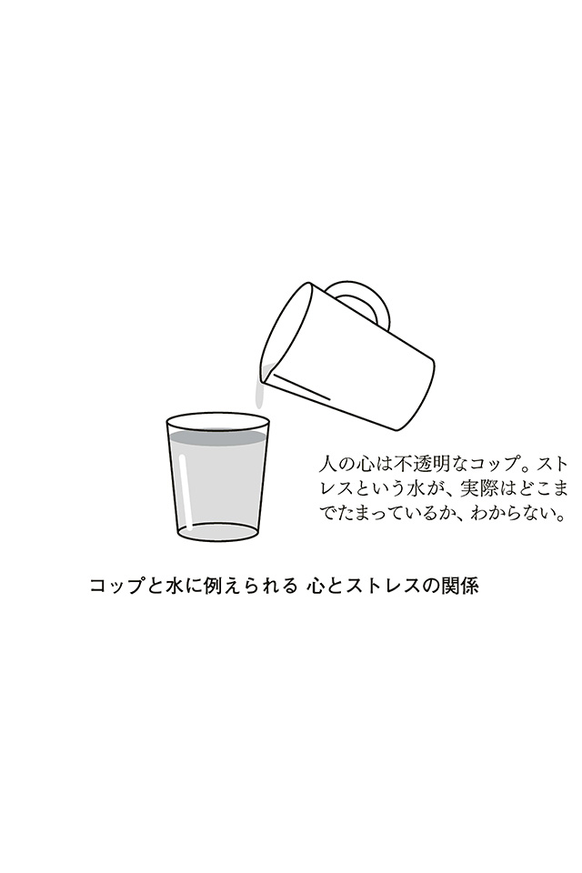
学級内が荒れている、学級崩壊している、保護者からのクレームが激しい、という悩みを抱えている先生がクリニックに来ました。
Ｊさん 34 歳女性、小学校教師
──こんにちは。今日はどうされましたか？
「学校教師としてやっていく自信がありません。保護者さんや児童への対応がたいへんで、どうしていいかわからないんです」
──なるほど。お話を詳しくうかがいましょうか。
「......ある子のかんしゃくやパニックが激しいのです。落ち着きもなくて、たまに教室からフラッと運動場へ出て行ったりします。校門の外に出ることはありませんので、そういう時は頃合いを見はからって迎えに行ったりするのです。その子のことでは、クラスの運営上、一部の保護者の間では問題になっていました。
ある時、偶然かわざとかわからないんですけど、その子が手を振り上げた時に他の子どもの顔に当たったことがあって。顔に当てられた子の保護者さんから、『どう責任をとってくれるんですか』、と」
──落ち着きのないそのお子さんは、児童精神科にかかっているんですか？
「いやそれが、親御さんがなかなか行ってくれないのです。以前、『行かれてはどうか』と少し伝えただけで猛烈な勢いで拒絶されました。
その親御さんは、話を聞いてもとりとめがないんです。面談を切り上げるタイミングも難しくて、タイミングをはかりかねている間に、二時間くらい延々と話を聞かされていたこともありました。それだけ、自分としては精いっぱいやっているつもりなのですが、役に立っているのかどうか......。
他の保護者さんからの突き上げもありますし、もうどうしていいのかわかりません」
──そうですね、ちょっと問題が複雑ですね。まずは、問題を整理していきましょうか。
今の問題としては、三つ挙げられますね。問題行動を起こしている子どもへの対応、それからその子の親御さんへの対応。そして、他の子どもたちとその保護者さんへの対応ですね。そのなかで、優先順位が高そうなものから取り組んでいきましょう。
まず、問題行動を起こしている子どもへの対応、次に、その保護者さんへの対応をしていけば、おそらくその他の親御さんの問題も落ち着いていくと思います。
問題行動の子どもへの対応ですが、たとえば今、心がけている対応はありますか？
「いえ、何か問題があるたびに対応しているだけです。ふらりと出て行ったりする時は、他の子どもの手前、厳しく指導することもあるのですが、ぜんぜんいうことを聞いてくれません」
──では、事前の対応や対策というのはあまりされていないようですね。
「ああ、そうですね、教室に鍵をかけて出られないようにでもすればいいんですかね？」
──いえいえ、そこまでする必要はないですよ。ただ、現在の状況では、後手後手にまわっているようですね。では、問題行動を一つひとつ絞って予防策や対応策を考えていきましょう。「一番なんとかしたい、問題行動」はなんですか？
「そうですね......やっぱりふらりと教室から出ていくことでしょうか......」
──教室から出て行ったとして、どうなるんでしょう？ 行方不明になったり、校門から外に飛び出したり、そんなことはありますか？
「いえ、一度もないですね。たいていはお気に入りの場所があるので、そこで、ぼーっとしていることが多いようです」
──お気に入りの場所？
「はい、学校で情操教育の一つとして、犬を飼っているのですが、そこに行って、ぼーっと見ているようです」
──気が済めば戻って来る？
「そうですね、いつの間にか戻って来ていることが多いです」
──でしたら、他の子どもへの直接的な迷惑行為もなさそうですし、その行動については、当面、緊急的な対応は必要なさそうじゃないですかね？
「そういわれてみるとそうですけど......。他の児童の手前、その子だけ見逃す、というのも......」
──どうでしょう、これは一見ピンチですが、子どもたちへの教育という観点からはチャンスかもしれませんよ？
「はあ」
──いろんな人がいて、彼は授業中ふらふらと外に出てしまうけど、もともと落ち着いてじっとしていられない特徴がある子だから、騒がずに放っておいてあげようね、って説明したら？ 社会には多様な人がいるということが子どもたちにもわかりますし、他人と違う行動をしたからといって「即、問題だ！」と、偏見の目を向けることもなくなる、いい機会だと思いますよ。
「たしかにいわれるとそうかもしれませんが。みんな納得するかなぁ？ えこひいきとかいわれそう」
──全員がすぐに納得することはないでしょう、時間をかけていきましょう。先生の方針が一貫すれば、次第に子どもたちの動揺もなくなってくると思いますよ。
「わかりました。ちょっとずつやってみます......」
〔数回面接の後〕
──どうでしょう、最近の様子は？
「ふらふら動物を見に行くことも多いので、何か彼の興味に合ったことはないかと考え、動物の世話係を任せることにしました。彼が世話係をきっちりこなしているのでびっくりしました。決まったスケジュールがあるときっちり動けますし、世話を忘れることもないので、面倒見がよいと他の子どもからも評価されています。
彼自身も最近は自信をつけたようで、突然泣きだすとか、パニックになることも減ってきたような気がします。
彼への対応がうまくいったので、私も少し自信がつきました」
＊
Ｊさんは、周囲への理解を求め、環境調整を行い、上手な役割分担をしたことにより、クラス運営もうまくいったようです。
コミュ障な人の問題行動を解消しようと、一人で頑張りすぎる必要はありません。問題行動があった時は、その特性を生かす方向で対応し、全体を見渡すことで、Ｊさんは自分への自信にもつなげたのです。
配偶者が困った人だ、なんとかしてほしいという場合を見てみましょう。こういったケースでは、だいたい次のようなパターンに分類されるようです。
・妻と会話をしていても、話が通じない。家事ができなくて困っている。
・夫と会話をしていても、話が通じない。計画性がなくて困っている。
・夫の仕事が毎日遅く、最近、疲れはてているようだ。うつ病かもしれない？
一つ目と二つ目のケースは、発達障害の疑いがあります。しかるべき医療施設で、きちんと診てもらう必要があるでしょう。
ここでは、三つ目の「夫の仕事が毎日遅く、最近、疲れはてているようだ。うつ病かもしれない？」というケースを見てみましょう。
Ｋさん 33 歳女性、専業主婦
同僚の奥さんと会話をしている時、夫が仕事でミスが多いことを指摘された。不注意が重なっている様子。テレビを見ていたら「ＡＤＨＤ」「発達障害」という言葉を初めて聞いて不安に。症状を考えると、どうも似ているような気もする......。
──ご主人は、以前から不注意でミスも多かったのでしょうか？ 今の仕事は長いのですか？
「大学を卒業してすぐに今の会社に就職していますから、もう15 年になります。そういえば、ミスが多かったって話は聞いたことがありません。ＡＤＨＤや発達障害なのでしょうか？」
──ＡＤＨＤなどに代表される発達障害は、生まれつきのものですよ。今までミスもなくすごしてきて、さらに子どもの頃も、どちらかといえば片づけができて問題がなかったというのなら、可能性は低いでしょう。
もちろん、本人を診察して見ないことにはなんともいえませんが。まれに、転勤や異動、転職などにより、それまで生かしてきた「自分の疾患特性」から離れた仕事に就いたことによって、問題が顕在化するケースもないとはいえません。
でも、特に転勤や異動、転職はなかったのですよね？ 何か変化は？
「そうですね、思いつくところでは、不況もあって、人員が少し削減されたのと、ちょっと多忙になったところでしょうか。忙しいっていうのが口癖で、帰りも遅くなりましたし、ご飯もおいしそうに食べてくれません......。昔はお茶碗二膳くらいは軽く食べていたのですが......」
──では、ますますうつの可能性が大きいでしょう。やはり受診してもらいましょう。それもできるだけ早めに。
「でも、仕事が忙しい、と。以前は幼稚園に行っている娘ともよく遊んでいたのですが、ぜんぜん遊ばなくなり、イライラして怒ることもあって、娘も夜泣きしたり不安定になっているのです。私も家事と夫の対応に追われて、余裕を持って娘に接することができなくなって......。先が見えなくて、娘の前で泣いたりしてしまうのです。よくないとは思っているのですけど......」
──会社の協力が必要なようですね。おおごとにしたくないのなら、奥さん同士のネットワークを通じて、同僚から働きかけをしてもらうのもよいでしょう。
会社の健康診断は受けていますか？
「はい、春と秋にあります。来週、秋の検診があります」
──検診などもいい機会ですよ。問診で異常を指摘されるケースもありますし、根まわしをして、やんわりとメンタルクリニックの受診を産業医からうながしてもらうこともできます。まず、検診前に、会社と連絡をとって産業医に伝えたほうがいいですね。
＊
今回のケースでは、夫のうつも問題なのですが、Ｋさん本人も疲れはててしまい、対応に余裕がなくなっている様子がうかがえました。このような場合は、当事者同士での問題解決にこだわると、泥沼にはまることも珍しくありません。
「自分の心に余裕がないかも？」と感じたら、自分一人のコミュニケーション能力で、手の届く範囲でなんとかしようとこだわるのは危険な場合もあります。
コミュニケーション障害そのものでは、死にいたることはありませんが、発達障害の疾患にうつ病を合併していたり、もしくは重度のうつ病の場合は、注意が必要となってきます。
うつ病は必ず治る疾患（最近の新型うつ病は長引く場合もありますが）といわれていますが、自殺してしまっては、治るものも治りません。特に、自殺者が３万人を超えていて、この先も急速に改善する見込みの薄い日本の社会情勢では、リスクマネジメントが非常に大切になってきます。
一人でなんとかしようと考えずに、多くの人にかかわってもらいながら、コミュ障な人と、自分の心の余裕の問題とに対応していきましょう。
ここまで、さまざまなコミュ障な人たちへの対応法についてご紹介してきました。どのケースでも、相手に合わせて、行動・思考パターンを考えていくのが大切だということはおわかりいただけたと思います。が......あまりにも、やり過ぎてしまうと、自分自身が疲れてしまいますよね。
合わせてあげる、理解してあげるというのも、行き過ぎてしまうと、結局は「振りまわされてしまう」ということにつながりかねません。
「コミュ障な人」との円滑なコミュニケーションの進め方、上手な付き合い方について考え、実践するのは、いわば「他人へのケア」です。しかし、当然ながら、他人をちゃんとケアするならば、「自分自身のケア」もおろそかにしてはいけません。
他人へのケアが仕事の中心となる人たちのことを、「対人援助職」といいます。代表的なのは、医師、看護師などの医療職ですが、それ以外にも、心理職や福祉介護職などがあります。
対人援助職において、昔から問題となっているのは「燃え尽き症候群」です。他人のケアばかりを考え、対人援助に生きがいを見出し、頑張り続けた結果、自分自身が燃え尽きてしまい、抑うつ状態や体調不良などの心身不調状態を呈してしまうことをいいます。
残念ながら、燃え尽き症候群となってしまうのは、プロの対人援助職としては好ましいものではありません。だからこそ、「自分自身をケアする」というセルフケアの概念が非常に重要なのです。
「まず、自分自身を一番大切にする」セルフケアは、プロの対人援助職が大切にしていることです。そして、セルフケアは、コミュ障な人たちと付き合う一般の人にとっても、もちろん大切になってくるのです。
具体的なセルフケアの方法は、人それぞれですね。マッサージやヨガが自分自身の癒やしになるという人もいるでしょう。また、友人と会食をしてお酒を飲んで語り合うことで、癒やしが得られる人もいます。「これがいい」「これはダメ」というものはありません。
いろいろ試してみることが大切ですが、そのなかでもポイントは二つ。
・いいと思ったセルフケアの方法を続ける。
・セルフケアの方法は、年齢とともに変わっていくことを理解する。
「続けることのできない方法」は、セルフケアに向いていないかもしれませんね。続かないということは、どこかに無理があるということです。無理にセルフケアを「頑張ってしまう」のは、本来の意味から外れてしまいます。
また、僕を例にすると、大学生の時はオールナイトでカラオケなどをして盛り上がり、すっきりしていたものです。しかし、歳をとるにつれ、体力、気力も当然、衰えます。
昔はすっきりしていたのに、今は疲ればかりがたまる、という行動は珍しくありません。年齢とともに、セルフケアの方法は変わっていくものです。体験的に有効だった方法にこだわっていては、かえって体を傷めることになりかねませんね。
難しく考えることはありません。日々、新しいセルフケアの方法を探して試していくことを、楽しむようにすればいいのです。
セルフケアをしながら、健康に毎日をすごしていくためには、どんな心がけが必要になってくるでしょう？ 僕自身、日々迷いながらすごしていくなかで、健康への心がけは、「シンプルであればあるほどやりやすい」ということに気づきました。
シンプルな心がけとは何か──いろいろ考え実践し、僕が行き着いたのは「健康三原則」です。これは、精神科の患者さんにも、内科や外科の患者さんにも、さらに、すべての一般の人たちにも当てはまることなので、紹介しましょう。
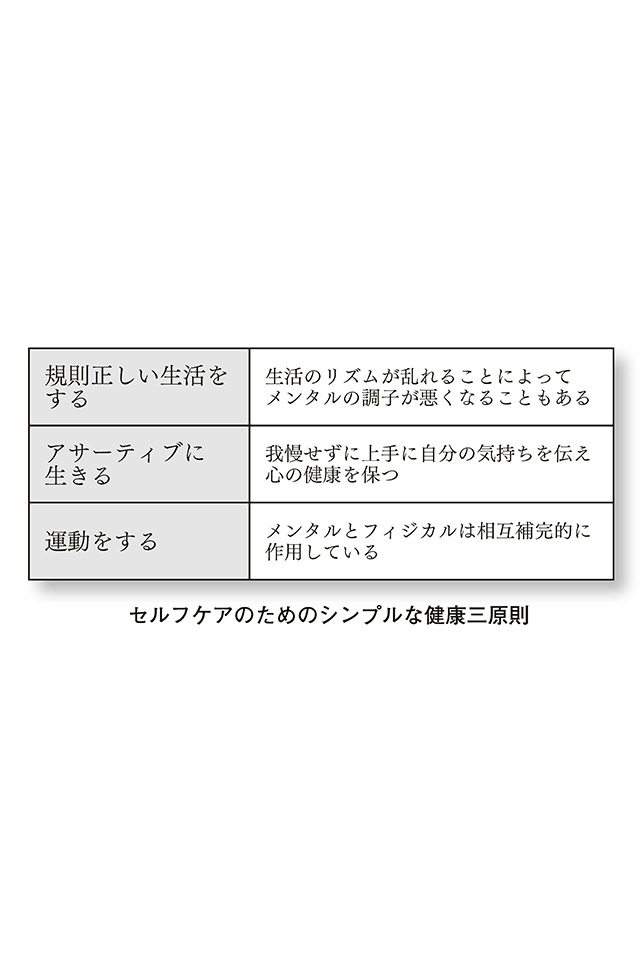
規則正しい生活をする
世の中には、「朝活」「早起き」などの書籍もたくさんありますね。早起きが健康にいいことは昔からいわれてきたことですが、あまり「朝」にこだわりすぎる必要はありません。
24 時間オープンのコンビニエンスストアなどが当たり前になり、人々の生活は朝型から夜型にシフトしています。便利な世の中になったものですが、夜にオープンしている店があるということは、当然そこで働いている人たちがいることになり、さらに、コンビニを利用している人たちはもっとおおぜいいるということになるのです。
夜型の生活をする人が多くなった現在において、普遍化できる、みんなが実行可能な生活サイクルとはなんでしょうか？ それは「規則正しい生活」です。できる限り「決まった時間に寝て、決まった時間に起きる」ということ。これなら誰でもできるはずです。
生活が乱れたことによって、メンタルに不調をきたし、精神科を受診される方は、実はたくさんいます。このようなタイプの人たちには、薬を処方しなくても生活リズムの改善を指導するだけで、メンタルの不調がよくなっていくことがあります。「生活の乱れは、心の乱れ」というよく聞く言葉は、真実なのですね。
アサーティブに生きる
「アサーティブ」というのは、「上手な自己主張」です。
日本人には周囲との調和を尊ぶ精神があり、これは美点として諸外国から大きく評価されています。「謙譲の精神」ともいいますね。
しかし、逆に「自己主張」という面からすると、非常に苦手な民族であるといえます。学校教育でも、突出した才能へのケアがなされていないことについては前述した通りですが、これは「目立つことをよしとしない」クラス運営ばかりが、教育現場で重視されていることを表しているといえるでしょう。
一方、諸外国の多くでは、しっかりと自己主張することが当たり前とされています。相手の意見に対して反論しないということは、「承諾した」と見なされてしまうので、とにかく自分の意見を表明するのです。彼らは、自己主張したり、ディベートをしたからといって、相手の人格を否定するようなことはありません。
帰国子女が日本の学校教育に戸惑い、馴染めないケースは多々報告されていますが、それは海外流の自己主張が、日本の学校教育を受けてきた子どもたちにとって、異質なものとして映るからでしょう。
「グローバル化した世界では、謙譲はよくない」というつもりはありません。何が何でも海外のマネをしようという論調には、正直なところ僕もうんざりしています。日本人には日本人のよいところがあります。大切なのは、自分にないスキルを認め、取り入れようと勉強し、バランスのいい思考法を身に付けることだと思います。
我慢せずに自分の気持ちを伝え、相手も自分も不愉快にならずに気持ちを理解し合うことが「アサーティブ」です。相手に自分の思いを理解してもらうためには、具体的に自分の要求をイメージして、言語化することが大切なのです。
たとえば、子どもに対して「頑張れ」というだけではなかなか通じませんよね。何をどう行動すればよいのかを伝えるためには、「次は宿題の期限を守ろうな」というように声をかけるのがアサーティブです。
アサーティブでいるためには、まず自分を知ること。自分を知るとは、自分の気持ちに正直になることです。自分の感情にウソをついて正反対の行動をしたり（これを心理学的用語で「否認」といいます）、感情を抑えつけて我慢したり（「抑圧」といいます）することは、心の健康にとってよいことではありません。
自分の気持ちに素直になって行動できれば、あとでいたずらに後悔したり、自分を責めたりすることもなくなります。そして、マイナスの感情はため込まずに、小出しにストレス解消をしていくのです。自分の気持ちに正直になって、アサーティブに「言いたいことは言う」ことです。
また、遠慮をして「言いたいけど、言えない」という態度から、「言えるけど、言わない」というように、主体性を持って選択することもアサーティブです。
さらに、友達関係や夫婦関係などにおいては「アイ・メッセージ」も大切です。アイ・メッセージとは、「あなたはこうすべきだ」というのではなく、「自分はこうしてほしい（そうしてくれたらうれしい、逆に、そうしてくれないと悲しい）」と伝える方法です。この時、自分の思いを伝えたいあまりに感情的にならず、できる限り事実や具体性に配慮して、気持ちを表現するとよいでしょう。
運動をする
メンタル（心）とフィジカル（身体）はつながっています。「健全な肉体には健全な精神が宿る」、という言葉がありますが、逆もまた然りです。健全な精神が、健全な肉体をつくるのです。ニワトリが先かタマゴが先か、ということではなく、精神も肉体も相互補完的に作用しているということを理解しましょう。
心の安定を保つには、身体の健康が欠かせないことはたしかです。身体を鍛えること、運動による抗うつ効果は科学的にも実証されています。
ＢＤＮＦ（脳由来神経栄養因子）の欠乏が、うつ状態に関与することは、これまでの研究でわかっています。そして、運動によりＢＤＮＦの産生が活性化するといわれています。
僕自身、患者さんのお手本になる生き方を日々目指しています。フィットネスジム通いも続けていますし、トライアスロンにも挑戦しています。
対人援助者である自分自身を一番大切にし、健康であることが、患者さんを治療するうえでも重要な説得力を持つと、僕は考えています。
患者さんや患者の家族の方からは、「先生は、いつもうつうつとした相談を聞いていて疲れませんか？ うつが移りませんか？」とよく質問されるのですが、「健康三原則」を実践している限りは、まったく大丈夫なのです。
「健康三原則」について最後に述べましたが、一番大切なのは、健康三原則にせよコミュニケーションにせよ、すべては「つきつめて頑張ろうとし過ぎない」ことです。
「ぼちぼち」でいいのです。「ぼちぼち」とは、「腹六分の生き方」といい換えることもできるでしょう。
「腹八分」、というのはよく使われる言葉ですね。子どもの頃に、お腹いっぱい食べようとして、お母さんから「腹八分にしておきなさいよ」といわれたことがある人も多いのではないでしょうか。
でも、みなさん、腹八分にしておこうと思っても、ついつい食べ過ぎていませんでしたか？
人間は、ついつい「やり過ぎてしまう」生き物なのです。ですから、何をするにしても、「腹六分」を心がけてください。そうすれば、ついついやり過ぎてしまっても、「腹八分」くらいで収めることができるのです。
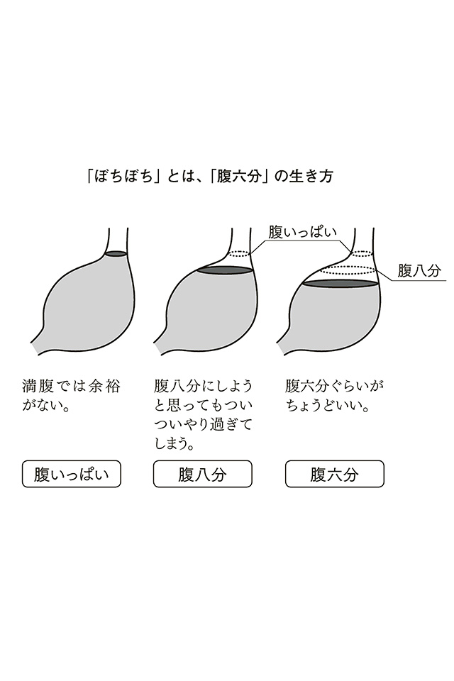
この本では、コミュ障な人への対応法について、たくさんのことを述べてきましたが、「これを全部、完璧に実践しなくては！」と考える必要はありません。
ぼちぼち、腹六分で、できることから実践してみてください。
コミュ障で周囲を困らせる人を排除したり、矯正したりするのではなく、まず理解すること。そして自分自身にできるコミュニケーション方法を一つひとつ試していき、うまくいったらよろこび合って、成功体験をともに共有すること......。
細かいことはさておき、これらのことさえ忘れなければいいのです。そうすることによって、お互いにおいて失われつつあった信頼関係を回復させることができ、また新しい希望あふれる未来を創造していけることでしょう。
人の多様性を認め合い、コミュ障な人と、そうでない人とが、みんな社会の一員として自分らしく活躍できる、そんな温かい世の中は、あなたの「腹六分の実践」から実現されていくのです。
「新型うつ病」「適応障害」「自閉症スペクトラム障害」「アスペルガー障害」「ＡＤＨＤ」「片づけられない女たち」......これらいずれかの言葉が、テレビや新聞、雑誌で毎日のように取り上げられています。これは、コミュニケーション障害について、社会が一定の理解を示すようになってきた証といえるでしょう。
しかし一方では、心理検査が本来の目的とは離れた用途で、企業などで使用されているとも聞きます。なかには、このような文言が謳われているウェブサイトもありました。
「精神的に病んだ人や頭がおかしくなった人を発見して、問題行動やトラブル・クレーム被害、うつ症状等のメンタルヘルス被害から、あなたの会社を守ります」
病んだ人を排除する、そのような人を採用しない、相手にしない。もし、採用した場合には退職の理由にするなど、常識では許されないようなことがまかり通りつつあります。
なぜ、このような状況になってしまったのでしょうか？
日本は、長い不況が続いています。失業への不安、いっこうに減らない自殺者の数、東日本大震災、原発問題など、僕たちを取り巻く状況は暗澹とし、人間関係の軋轢も高まってきています。
このような状況のなか、「コミュニケーション障害を病んでいる人はいらない」、そんな考え方では、社会はますます立ちゆかなくなることは明らかです。
深い不安の波に沈んでしまった日本では、誰もが、いつかはコミュ障になる可能性を秘めています。あなたも、病むことがあるかもしれません。その時、あなたを受け入れてくれる社会は、どうあるべきなのか、考えてみてください。「コミュ障な人」の立場になって、考えてみてください。
＊
人は、わからないから、不安になるのです。
相手がわからない。
自分が何をしていいのかわからない。
どうすれば「コミュ障な人」と、うまくコミュニケーションできるのかわからない。
不安を受け止め、乗り越えていくには、わからないことをわからないまま思考停止して放置するのではなく、理解しようとすること。そして、どうすればいいのかを学んでいく姿勢が不可欠なのです。
今、「コミュ障な人」とかかわる人に足りないものは自信です。自信は成功体験からつくられます。
「１００パーセント相手を理解し、コミュニケーションできた」という、大きな成功体験を目指すのではなく、ささやかな「うまくいった出来事」をよろこびましょう。相手が自分のことを理解してくれたなら、素直にほめましょう。
50 パーセントもうまくいかなかったら？ それでもいいのです。むしろ、うまくいかないことのほうが多いのかもしれません。現実は、10 回やって２、３回うまくいくくらいの確率かもしれません。
しかし、たとえ確率は低くても、行動を起こさなければ、成功体験のカケラすら得ることはできません。コミュ障な困った人を、「わからないから」と避けているだけでは、成功体験はゼロのままなのです。
失敗は当たり前です。失敗を恐れず、行動に移して、コミュニケーションがうまくいったという自信を、コミュ障な人と共有していけば、きっと日本の社会はよくなっていくと、僕は信じています。
＊
最後に。
日々の診療で僕を支えてくれている「医療法人きょう」のすべてのスタッフに感謝します。なかでも院長として、大和西大寺きょうこころのクリニックで診療にあたってくれる、トライアスロンのチームメイトでもある来田誠先生、ありがとう。先生との出会い、縁がなければこの本が生まれることはなかったでしょう。来田先生の友人である、メドレー社・瀧口浩平社長との出会いによって、この本の出版社であるディスカヴァー・トゥエンティワンの干場弓子社長との縁が紡がれました。
出版に関して辛抱強く、そして温かな指導をいただいた干場社長には本当に感謝申し上げます。そして、担当編集として素晴らしい本にまとめてくださった林秀樹さん、ありがとうございます。林さんから教えていただいたアドバイスを、これからの僕の表現活動に生かしていきます。
この原稿は、ディスカヴァーで何度かカン詰になりながら書き上げました。優しく迎えてくださった社員・スタッフの皆様にはあらためてお礼申し上げます。笑顔と情熱にあふれる素晴らしい仕事場であると感じました。僕がカン詰になりに行くたびに、爆弾低気圧、大型台風、と東京は嵐に見舞われてしまいました。雨男ならぬ「嵐を呼ぶ男」でした。これからもお世話になる機会があれば、これに懲りず引き続きよろしくお願いいたします。
帯に推薦の言葉をいただいた勝間和代さん、本当にありがとうございました。僕はサポートメールも購読している「カツマー」なので、このうえないよろこびでした。勝間さんにいただいた「giveの５乗」を、また５乗にして社会にお返ししていきます。
また、勝間さんを、発達特性を生かして「gifted（ギフテッド）」として活躍しているお一人として、この本で紹介しました。こころよく内容を承諾いただき、感謝です。
＊
両親と、兄弟、妻、息子、愛犬ピノコ、みんながいたから、僕は今までも頑張ってこられたし、これからも前を向いて進んでいけると感謝しています。本当に、ありがとう。
この本を執筆している途中、２０１２年５月８日に愛犬のラブが３歳の若さで亡くなりました。僕にとっては大切なファミリーでした。先天的な免疫不全を抱えながらも、二回の大手術を乗り越え、一生懸命生きてくれました。病気のラブを排除せず、最後まで看取ってあげることができた経験を、自分の誇りにしたいと思います。
姜昌勲
『自殺問題Ｑ&Ａ─自殺予防のために』秋山聡平、斎藤友紀雄編、至文堂
『うつ病の治療ポイント─長期化の予防とその対策』平井孝男著、創元社
『片づけられない女たち』サリ・ソルデン著、ニキ・リンコ訳、ＷＡＶＥ出版
『他人とうまくいかないのは、発達障害だから？』姜昌勲著、ＰＨＰ研究所
『面倒くさがりやのあなたがうまくいく55 の法則』本田直之著、大和書房
『ズルい仕事術』勝間和代著、ディスカヴァー・トゥエンティワン
『ギフテッド─天才の育て方』杉山登志郎、岡南、小倉正義著、学研
『スティーブ・ジョブズ 人を動かす神─なぜ、人は彼に心を奪われるのか？』竹内一正著、リュウ・ブックスアステ新書
『高機能自閉症・アスペルガー症候群「その子らしさ」を生かす子育て』吉田友子著、中央法規出版
『窓際のトットちゃん』黒柳徹子著、講談社
『結局、女はキレイが勝ち』勝間和代著、マガジンハウス
『ＤＳＭ―Ⅳ―ＴＲ 精神疾患の分類と診断の手引き』American Psychiatric Association著、高橋三郎、大野裕、染矢俊幸訳、医学書院
『うちの妻ってどうでしょう？』福満しげゆき著、双葉社
『増補版 アサーティブ』岩舩展子、渋谷武子著、PHP研究所
『精神薬理学エセンシャルズ─神経科学的基礎と応用─ 第３版』スティーヴン・M.スタール、仙波純一著、メディカル・サイエンス・インターナショナル
医療法人きょう
きょうこころのクリニック
奈良県奈良市学園北１丁目14 ―13
メディカル学園前３Ｆ
大和西大寺きょうこころのクリニック
奈良県奈良市西大寺東町２―１―63
サンワシティ西大寺３Ｆ
URL:http://www.kyoclinic.jp/saidaiji/
きょうまさのりオフィシャルサイト
オフィスTo―Kyo
東京都港区港南２丁目２―４
あなたのまわりの「コミュ障」な人たち
2012年8月25日 初版第1刷発行
2012年8月25日 電子書籍版発行
著者 姜 昌勲
発行者 干場弓子
発行所
株式会社ディスカヴァー・トゥエンティワン
〒102―0093 東京都千代田区平河町2―16―1
TEL 03―3237―8321(代表)
FAX 03―3237―8323
ツイッター @discover21
Facebook公式ファンページ
http://www.facebook.com/Discover21jp
本作品の全部あるいは一部を無断で複製・転載・公衆送信することを禁止します。また、有償・無償にかかわらず本作品を第三者に譲渡することはできません。
ISBN978―4―7993―1202―5
(c)Masanori Kyo, 2012.